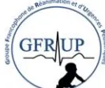

Avec la participation de
Société Française de Neurochirurgie Pédiatrique (SFNCP)
Société Française des Neurochirurgiens Libéraux (SFNCL)
Association de Neuro-Anesthésie et Réanimation de Langue Française (ANARLF)
Société Française d'Anesthésie et Réanimation (SFAR)
Groupe Francophone de Réanimation et d'Urgences Pédiatrique (GFRUP)
Société Française de Neuro-Radiologie (SFNR)
Société de Pathologie Infectieuse de Langue Française (SPILF)
Société Française de Médecine Physique et de Réadaptation (SOFMER)
NEUROSURGICAL MANAGEMENT OF
ADULT AND PEDIATRIC TRAUMATIC BRAIN INJURY
DURING THE INITIAL PHASE
2025
V1.13 – 19/03/2025 – R Manet, A Dagain
Romain MANET (SFNC), Arnaud DAGAIN (SFNC)
Jean François PAYEN (SFAR, ANARLF), Hugues DE COURSON (CRC SFAR, ANARLF)
SFNC: Cyrille CAPEL (Amiens), Arnaud DAGAIN (Toulon), Philippe DECQ (Paris), Matthieu FAILLOT (Paris), Clémentine GALLET (Lyon), Vincent JECKO (Bordeaux), Stéphane GOUTAGNY (Paris), Christophe JOUBERT (Toulon), Romain MANET (Lyon), Édouard SAMARUT (Nantes)
SFNCP: Nathalie CHIVORET (Nice), Andres COCA (Strasbourg), Mathieu VINCHON (Lyon)
SFNCL: Alice ROLLAND (Montpellier)
SFAR/ANARLF : Baptiste BALANCA (Lyon), Mickael CARDINALE (Toulon), Pierre ESNAULT (Toulon), Jean-Denis MOYER (Caen), Jean François PAYEN (Grenoble), Hervé QUINTARD (Genève), Stéphanie SIGAUT (Paris)
GFRUP: Guillaume MORTAMET (Grenoble)
SFNR: François COTTON (Lyon), Alexandre BANI-SADR (Lyon), Sébastien GAZZOLA (Toulon)
SPILF: Marion LE MARECHAL (Grenoble)
SOFMER: Jacques LUAUTÉ (Lyon), Eric VERIN (Rouen)
Claire Haegelen (Présidente); Ilyess Zemmoura (vice-président); Damien Bresson (Secrétaire); Olivier Hamel (secrétaire adjoint); Thomas Roujeau (Trésorier); Hayat Belaid; Marc Baroncini
Jean-Michel Constantin(Président); Marc Léone (1er vice-président); Karine Nouette-Gaulain (2ème vice-président); Isabelle Constant (secrétaire générale); Frédéric Le Saché (secrétaire général adjoint); Evelyne Combettes (trésorière); Olivier Joannes-Boyau (trésorière adjointe); Pierre Albaladejo; Julien Amour; Hélène Beloeil; Valérie Billard; Marie-Pierre Bonnet; Julien Cabaton; Sébastien Campard; Vincent Collange; Marion Costecalde; Violaine D'Ans; Laurent Delaunay; Delphine Garrigue; Frédéric Lacroix; Sigismond Lasocki; Anne-Claire Lukaszewicz; Jane Muret; Nadia Smail
Alice Blet (Présidente), Marie-Pierre Bonnet (représentante CA), Hélène Charbonneau (Secrétaire), Aurélien Bonnaud, Anaïs Caillard, Isabelle Constant (représentante CA), Hugues de Courson, Matthieu, Dumont, Denis Frasca, Pierre Huette, El Mahdi Halfiani, Elise Langouet, Axel Maurice-Szamburski, Daphné Michelet, Maxime Nguyen, Stéphanie Ruiz, Michaël Vourc'h.
Thomas Geeraerts (Président), Vincent Degos (Secrétaire général), Claire Dahyot-Fizelier (Trésorière), Russel Chabanne, David Courret, Hervé Quintard, Jean-François Payen
Objectif : Élaborer un référentiel français multidisciplinaire qui aborde les prises en charge neurochirurgicales des traumatismes cranio-encéphaliques de l'adulte et de l'enfant, à la phase initiale.
Conception : Un comité d'experts a été constitué sur invitation de la Société Française de Neurochirurgie (SFNC), avec la participation de la Société Française de Neurochirurgie Pédiatrique (SFNCP), la Société Française des Neurochirurgiens Libéraux (SFNCL), l'Association de Neuro-Anesthésie et Réanimation de Langue Française (ANARLF), la Société Française d'Anesthésie et Réanimation (SFAR), le Groupe Francophone de Réanimation et d'Urgences Pédiatrique (GFRUP), la Société Française de Neuro-Radiologie (SFNR), la Société de Pathologie Infectieuse de Langue Française (SPILF) et la Société Française de Médecine Physique et de Réadaptation (SOFMER).
Méthodes : Les questions ont été formulées selon le format PICO (Patients, Intervention, Comparaison, Outcome), regroupées en 7 champs : 1. Facteurs de mauvais pronostic, 2. Hématomes extraduraux, 3. Hématomes sous-duraux aigus, 4. Embarrures et brèches ostéo-durales de la base du crâne, 5. Traumatismes cranio-encéphaliques pénétrants, 6. Désordres hydrauliques post-traumatiques, 7. Particularités pédiatriques.
Résultats. Le travail de synthèse des experts et l'application de la méthode GRADE® ont abouti à l'élaboration de 45 recommandations. Un accord fort a été obtenu pour l'ensemble des recommandations dès le premier tour de cotation.
Conclusion. Un accord fort a été identifié parmi les experts sur des recommandations importantes, transdisciplinaires, dont la finalité est l'amélioration des pratiques de prise en charge neurochirurgicales des patients victimes de traumatisme cranio-encéphaliques.
Objective: To develop a multidisciplinary French framework addressing the neurosurgical management of traumatic brain injury (TBI) in adults and children at the initial phase.
Design: An expert committee was formed by invitation of the French Society of Neurosurgery (SFNC), with participation from the French Society of Pediatric Neurosurgery (SFNCP), the French Society of Private-practice Neurosurgeons (SFNCL), the Neuro-Critical Care and Neuro-Anesthesiology French Speaking Society (ANARLF), the French Society of Anesthesia and Resuscitation (SFAR), the Pediatric Emergency and Intensive Care French Speaking Group (GFRUP), the French Society of Neuroradiology (SFNR), the Infectious Pathology French Speaking Society (SPILF), and the French Society of Physical Medicine and Rehabilitation (SOFMER).
Methods: Questions were formulated using the PICO format (Patients, Intervention, Comparison, Outcome), grouped into 7 categories: 1. Factors of poor prognosis, 2. Extradural hematomas, 3. Acute subdural hematomas, 4. Skull base fractures and dural tears, 5. Penetrating traumatic brain injuries, 6. Post-traumatic cerebrospinal fluid disorders, 7. Pediatric specifics.
Results: The synthesis work by the experts and the application of the GRADE® method led to the development of 45 recommendations. A strong consensus was reached for all recommendations at the first round of rating,
Conclusion: There was a strong consensus among the experts on significant, interdisciplinary recommendations aimed at improving the practices of neurosurgical management of patients suffering from TBI.
Romain MANET, Arnaud DAGAIN, Jean François PAYEN
Les traumatismes crânio-encéphaliques (TC) comptent parmi les traumatismes les plus graves, responsables de 30% de la mortalité post-traumatique aux USA [1] et 37% en Europe [2]. L'incidence annuelle du TC en Europe est d'environ 250/100 000 habitants, avec de fortes disparités régionales [3]. Malgré des efforts importants dans la prise en charge pré-hospitalière et hospitalière de ces patients, le TC demeure une source de séquelles neurologiques invalidantes, y compris après TC léger.
Pour aider les praticiens à adopter des règles décisionnelles communes dans cette prise en charge, de nombreuses recommandations et conférences de consensus nationales et internationales ont été élaborées. La plupart ont été conduites par des sociétés savantes d'anesthésie-réanimation et de médecine d'urgence, en collaboration avec des experts de neurochirurgie, de neuroradiologie, et de rééducation. Ainsi, il existe des recommandations sur la prise en charge médicale des TC légers (Glasgow Coma Score ) et des commotions cérébrales [4,5], des TC graves (GCS ) et modérés (GCS 9-12) chez l'adulte [6,7], des TC chez l'enfant [8], et des recommandations sur la prise en charge pré-hospitalière de ces patients [9] et sur les modalités de monitoring cérébral intracrânien [10,11]. Par ailleurs, la Neurocritical Care Society a émis des recommandations sur la neuropronostication des patients pris en charge pour TC modérés et graves [12].
Bien que les gestes neurochirurgicaux soient parties prenantes de cette prise en charge, les seules recommandations spécifiquement portées par la neurochirurgie datent de 2006 [13]. Quelques procédures chirurgicales ont été incluses dans les recommandations citées ci-dessus et ne feront pas partie des recommandations présentées ici: la dérivation ventriculaire externe (DVE) chez l'adulte [6,7] et chez l'enfant [8], la craniectomie décompressive chez l'adulte [6,7,14] et l'enfant [8]. Cependant, il existe un champ de discussion très vaste concernant les indications et les modalités des traitements neurochirurgicaux, quel que soit le degré de gravité du TC, pour les adultes et les enfants. Ce sera l'objet de ces recommandations.
Ces recommandations sont le résultat du travail d'un groupe d'experts réunis par la Société Française de Neurochirurgie (SFNC). Chaque expert a rempli une déclaration de conflits d'intérêts avant de débuter le travail d'analyse. Dans un premier temps, le comité d'organisation a défini, avec les coordinateurs d'experts, les champs d'application de ces Recommandations de Pratiques Professionnelles (RPP) et les questions à traiter. Des experts ont été ensuite désignés pour un travail d'analyse de la littérature. Les questions ont été formulées selon le format PICO (Patients, Intervention, Comparison, Outcome). La méthodologie GRADE (Grade of Recommendation Assessment, Development and Evaluation) a été appliquée pour l'analyse de la littérature. Un niveau de preuve a été défini pour chacune des références bibliographiques. Ce niveau de preuve pouvait être réévalué en tenant compte de la qualité méthodologique de l'étude, de la cohérence des résultats entre les différentes études, du caractère direct ou non des preuves, de l'analyse de coût et de l'importance du bénéfice.
Malgré un nombre important d'études sur la prise en charge neurochirurgicale du traumatisme crânio-encéphalique à sa phase initiale, il n'existe que très peu d'études à haut niveau de preuve, ce qui a justifié le recours à des RPP. Les recommandations ont été rédigées selon les formules standardisées suivantes : « les experts recommandent probablement de » pour les niveaux de preuve de grade 2 et « les experts suggèrent de » pour les avis d'experts. Chaque recommandation a ensuite été évaluée par chacun des experts et soumise à une cotation individuelle à l'aide d'une échelle allant de 1 (désaccord complet) à 9 (accord complet). Pour valider une recommandation, selon la méthode de consensus Delphi, au moins 50 % des experts devaient exprimer une opinion commune, tandis que moins de 20 % d'entre eux devaient exprimer une opinion contraire. Pour qu'une recommandation soit forte, au moins 70 % des participants devaient avoir une opinion commune. En l'absence d'accord fort, les recommandations étaient reformulées et de nouveau soumises à cotation dans l'objectif d'aboutir à un consensus.
Le champ de ces RPP concerne la prise en charge neurochirurgicale des TC de l'adulte et de l'enfant nécessitant un geste neurochirurgical à la phase initiale. Une recherche bibliographique a été réalisée à partir des bases de données PubMed et Cochrane. Pour être retenues dans l'analyse, les publications devaient être postérieures à 2006 (ou antérieures si jugées importantes par le groupe d'experts), avoir été publiées dans des revues à comités de lecture, en langue anglaise ou française. Une analyse spécifique de la littérature pédiatrique a été réalisée.
Les experts ont choisi de traiter 15 questions qui couvrent les domaines impliquant les indications et modalités des gestes neurochirurgicaux dans la prise en charge du TC à sa phase initiale, à savoir les facteurs pronostiques, l'hématome extradural, l'hématome sous-dural aigu, l'embarrure et la brèche ostéo-durale, le TC pénétrant, les désordres hydrauliques post-traumatiques, et les particularités pédiatriques. Le mauvais devenir neurologique a été souvent retenu comme critère de jugement principal, défini par le Glasgow Outcome Scale Extended (GOSE) [15]: décès (GOSE 1) et séquelles neurologiques lourdes (GOSE 2 à 4) (cf. annexe). Pour les questions pédiatriques, le GOSE peut être remplacé dans certaines publication par le Pediatric Cerebral Performance Category (PCPC) [16]. Un PCPC supérieur à 3 était considéré comme péjoratif. Les infections du système nerveux central et l'épilepsie pouvaient également être considérées comme des mauvais devenirs neurologiques.
Après synthèse du travail des experts et application de la méthode GRADE, 45 recommandations ont été proposées. Celles-ci représentent un effort collectif de praticiens pour tenter d'homogénéiser les pratiques et de fournir des arguments pour aider la décision neurochirurgicale devant chaque cas individuel.
Romain MANET, Mickaël CARDINALE, François COTTON, Hervé QUINTARD, Jacques LUAUTE, Éric VERRIN, Arnaud DAGAIN
Question 1 : Chez le patient présentant un traumatisme cranio-encéphalique grave nécessitant une craniotomie en urgence, la décision de limitation et/ou arrêt des thérapeutiques doit-elle être discutée de façon collégiale et multidisciplinaire pour permettre une meilleure évaluation du pronostic du patient ?
R 1.1 : Les experts suggèrent que chez le patient présentant un traumatisme cranio-encéphalique grave, nécessitant théoriquement une craniotomie en urgence, mais présentant des caractéristiques jugées « dépassées » (ne laissant aucun espoir de pronostic favorable), l'abstention neurochirurgicale précoce (avant 72h) doit systématiquement faire l'objet d'une décision collégiale, impliquant chaque fois que possible trois médecins seniors comprenant idéalement : un neurochirurgien, un médecin anesthésiste-réanimateur (ayant idéalement une compétence en neuro-réanimation) et un médecin rééducateur, permettant une neuro-pronostication la plus optimale possible.
AVIS D'EXPERTS (ACCORD FORT)
R 1.2 : Les experts suggèrent qu'en période de permanence de soins, une « collégialité restreinte » doit être mise en œuvre, impliquant au moins 2 médecins seniors pour permettre une meilleure évaluation du pronostic du patient.
AVIS D'EXPERTS (ACCORD FORT)
L'évaluation du pronostic d'une pathologie est un élément capital dans toute décision médicale. Dans le cas de la prise en charge des urgences neurochirurgicales, la neuro-pronostication précoce (réalisées dans les 72 premières heures) revêt un caractère particulièrement difficile. D'une part la décision chirurgicale peut avoir des conséquences lourdes et irréversibles. En particulier, compte tenu des potentielles séquelles neurologiques lourdes en cas de survie, certaines situations jugées « désespérées » peuvent faire décider d'une abstention chirurgicale qui peut aboutir à une limitation d'actes thérapeutiques actifs (LATA). Les LATA précoces (réalisées dans les 72 premières heures), constituent la principale cause de décès après TC graves, responsable de 45 à 87% de la mortalité hospitalière [17]. A contrario, la craniectomie décompressive permet en général de mettre définitivement le patient à l'abri d'un décès précoce par hypertension intracrânienne mais peut conduire à des séquelles neurologiques lourdes [18]. D'autre part, les éléments cliniques et paracliniques disponibles pour établir ce pronostic sont extrêmement restreints à la phase ultra-précoce : examen clinique initial réalisé dans des conditions incertaines, patient non examinable par le neurochirurgien dans le cas de la télémédecine, scanner cérébral de qualité variable, pouvant être pris en défaut lorsqu'il est trop précoce ou pour certaines localisations comme le tronc cérébral. Les modèles pronostiques de traumatismes cranio-encéphaliques (TC) restent peu précis dans la prédiction de l'évolution neurologique des patients, ne rendant compte que de 35% de la variation du pronostic final [19]. L'addition
d'un grand nombre de modalités est nécessaire pour affiner la neuropronostication [20], impossible à réunir à la phase ultra-précoce.
Dans le cas d'un TC grave, le patient dans le coma ne peut participer à la décision thérapeutique. Or, la définition d'un mauvais pronostic sort de la stricte définition médicale, et revêt un caractère subjectif, qui peut être différemment jugé a posteriori par les médecins, les patients et leur entourage [21].
En pratique, la gestion chirurgicale des TC graves est hétérogène [22] de même que le recours aux LATA précoces [17].
Les experts rappellent le cadre de la LATA en France, ainsi que les recommandations existant sur les pronostications et limitations thérapeutiques chez les patients cérébrolésés graves :
Premièrement, la LATA est encadrée sur le plan législatif : lois Kouchner (Loi n° 2002-303 du 4 mars 2002), Leonetti (Loi n° 2005-370 du 22 avril 2005) et Claeys-Leonetti (Loi n° 2016-87 du 2 février 2016) [23]. Dans le cadre de l'urgence, l'application stricte de cette loi peut être difficile à appliquer. Pour cette raison, la Société Française de Médecine d'Urgences et la Société de Réanimation de Langue Française ont publié en 2018 des recommandations sur les Limitations et arrêts des traitements de suppléance vitale chez l'adulte dans le contexte de l'urgence, disponible en ligne [24].
Deuxièmement, la Neurocritical Care Society a émis des recommandations sur la gestion des « lésions cérébrales dévastatrices » (Devastating brain injury) [25], définies comme toute condition neurologique à l'admission menaçant immédiatement le pronostic vital et fonctionnel pour laquelle une limitation thérapeutique précoce est envisagée [26] incluant:
Question 2 : Chez le patient présentant un traumatisme cranio-encéphalique, nécessitant une craniotomie en urgence, un indice de fragilité pathologique est-il associé à un mauvais pronostic ?
R 2.1 : Chez un patient victime d'un traumatisme cranio-encéphalique grave nécessitant une craniotomie en urgence, il est probablement recommandé de considérer les indices de fragilité pathologiques pour évaluer le pronostic, mais pas de manière isolée pour contre-indiquer le geste.
GRADE 2 (ACCORD FORT)
R 2.2 : Les experts suggèrent que les scores (détaillés en annexes) suivant peuvent être considérés comme pathologiques, afin d'évaluer le pronostic:
- Clinical Frailty Scale
AVIS D'EXPERT (ACCORD FORT)
Argumentaire
La fragilité (frailty) correspond au déclin fonctionnel multi-organe en lien avec le vieillissement, plus ou moins rapide et intense selon les individus, rendant compte de la vulnérabilité d'un individu face à des facteurs de stress, de manière plus pertinente que l'âge considéré isolément [27]. Plusieurs indices ont été récemment développés pour rendre compte de cette fragilité, parmi lesquels: le modified frailty index mFI-11 [28], le mFI-5 [29] dont la fiabilité chez les patients traumatisés est équivalente à la mFI-11 [30], la Clinical Frailty Scale (CFS) [31], le questionnaire du Programme de recherche sur l'intégration des services de maintien de l'autonomie (PRISMA 7) [32], le trauma specific frailty index (TSFI) [33]. Ces indices ont été corrélés à une augmentation de la mortalité à court et moyen terme, à une majoration des complications, à une augmentation de la durée de séjour hospitalier, à une majoration du déclin fonctionnel post-hospitalisation et à une dégradation de la qualité de vie dans de nombreux contextes pathologiques [34]. La fragilité est un facteur de mauvais pronostic indépendant de l'âge, chez le patient traumatisé [35].
Ces indices ont été peu étudiés dans le contexte de traumatisme cranio-encéphalique. Notre revue de littérature n'a retrouvé que 3 études non randomisées [36–38], 10 études rétrospectives [39–48] et une méta-analyse [49]. Plusieurs de ces études ont montré une relation significative entre l'âge, la fragilité et le pronostic neurologique des patients victimes de TC [36,39–41,49]. Le CENTER-TBI frailty index [36] est le seul indice spécifique au TC. S'il est très précis et bien adapté à la recherche, sa complexité le rend inutilisable dans la pratique clinique de l'urgence. Parmi les indices simples d'utilisation, des mesures de mFI-5 [37], et de CFS [48] apparaissent comme des marqueurs fiables de fragilité pathologique chez des patients pris en charge pour un TC.
Question 3 : Chez le patient présentant un traumatisme cranio-encéphalique, nécessitant une craniotomie en urgence, la présence d'une mydriase bilatérale aréactive à la prise en charge initiale est-elle associée à un mauvais pronostic ?
R 3 : Chez un patient présentant un traumatisme cranio-céphalique grave nécessitant une craniotomie en urgence à la phase initiale, les experts suggèrent de considérer la présence à la prise en charge d'une mydriase bilatérale aréactive non régressive (idéalement évaluée par pupillométrie automatisée) comme un facteur de mauvais pronostic, mais elle ne doit pas être considérée de manière isolée pour contre-indiquer le geste, en particulier si la mydriase est installée depuis moins de 2h.
AVIS D'EXPERTS (ACCORD FORT)
Argumentaire
La littérature publiée sur ce sujet rapporte un pronostic globalement sombre, en particulier en l'absence d'intervention chirurgicale [50–59]. La plupart des études publiées présentent de nombreux biais, incluant notamment le risque de prophétie auto-réalisatrice: la mydriase bilatérale aréactive étant traditionnellement jugée comme sans espoir d'évolution neurologique favorable, ces patients ne se voient pas offrir de prise en charge maximale, les privant ainsi d'une chance de survie et de rétablissement. Par ailleurs, le contrôle des autres mécanismes de mydriases (bêta2 mimétiques (salbutamol), levodopa, médicaments à effet anticholinergique (atropine, scopolamine, néfopam, IRS, imipraminiques), médicaments à effet sympathomimétique (adrénaline), stimulants du système nerveux central (amphétamines, cocaïne), barbituriques,
benzodiazépines, hypothermie sévère, traumatismes du globe oculaire et/ou des nerfs oculomoteurs communs, etc) n'est jamais rapporté, constituant un autre facteur confondant. Une étude récente souligne la surestimation de la mortalité et du mauvais pronostic (GOSE4) des études IMPACT et CRASH et la nécessité de recalibrer ces scores pronostiques [60].
Une seule métaanalyse [61] sur ce sujet a été publiée, portant sur 5 études de cohortes rétrospectives, de faibles effectifs (82 patients au total). L'analyse retrouvait une évolution favorable (GOSE4) chez 54.3% (95% CI 36.3% to 71.8%) des patients présentant un hématome extra-dural et 6.6% (95% CI 1.8% to 14.1%) des patients présentant un hématome sous-dural aigu. Le faible niveau de preuve des études et la limitation de l'analyse aux seuls patients présentant des hématomes extraduraux ou sous-duraux aigus, ne permettent pas de généraliser ces conclusions.
Une revue systématique de la littérature, incluant 22 études et 503 patients (essentiellement des études de faible qualité) [62] suggérait que les patients présentant une hernie trans-tentorielle et une mydriase bilatérale aréactive à la prise en charge initiale et qui bénéficient d'une intervention chirurgicale de décompression (craniectomie ou craniotomie) dans un délai ultra-précoce (2heures) ont environ une chance sur trois de survivre et une chance sur six d'atteindre une indépendance fonctionnelle (GOSE4). Dans quelques études rétrospectives de faibles effectifs, une prise en charge agressive associant osmothérapie et prise en charge neurochirurgicale dans les 2 heures suivant le TC était associée à une évolution neurologique favorable (GOSE4) chez 26,8 à 44,4% des patients [63,64].
Question 4. Chez le patient présentant un traumatisme crânio-encéphalique nécessitant une craniotomie en urgence, le délai de prise en charge est-il associé à un pronostic péjoratif ?
R 4. Chez un patient victime d'un traumatisme crânio-encéphalique grave nécessitant une craniotomie en urgence, les experts suggèrent de ne pas prendre en compte le délai de prise en charge de manière isolée dans l'évaluation du pronostic et la décision neurochirurgicale.
AVIS D'EXPERTS (ACCORD FORT)
Les données de la littérature sont hétérogènes et aboutissent à des résultats contradictoires : certaines tendent à montrer un effet négatif de l'allongement du temps de prise en charge sur le pronostic des patients victimes de TC, alors que d'autres ne retrouvent pas cet impact.
Plusieurs études rétrospectives d'effectifs limités [65–73] ainsi que des études plus robustes [74–78] ont montré un impact négatif de l'allongement du délai de prise en charge neurochirurgicale des TC sur le pronostic des patients.
Inversement, de nombreuses études rétrospectives de très faibles effectifs ne retrouvaient pas de corrélation entre le délai de prise en charge neurochirurgicale et le pronostic des patients [79–90]. Ces résultats sont corroborés par d'autres études de niveau plus élevé [91–96], allant jusqu'à questionner le concept de « golden hour » pour les TC [97].
Question 5 : Chez le patient présentant un traumatisme crânio-encéphalique nécessitant une craniotomie en urgence, la présence d'un traitement antithrombotique (anti-agrégant ou anti-coagulant) est-elle associée à un mauvais pronostic ?
R 5.1. Chez les patients présentant un traumatisme crânio-encéphalique nécessitant une craniotomie en urgence, en particulier chez ceux de plus de 65 ans, il est probablement recommandé de considérer, de manière non isolée, la présence d'un traitement anticoagulant (de type antivitamine K ou anticoagulant oral direct), comme facteur de mauvais pronostic, mais ne doit pas être considérée de manière isolée pour contre-indiquer le geste
GRADE 2 (ACCORD FORT)
R 5.2. Chez un patient présentant un traumatisme crânio-encéphalique grave, nécessitant une craniotomie en urgence, il n'est probablement pas recommandé de considérer la présence d'un traitement anti-agrégant plaquettaire en monothérapie par aspirine comme un facteur de mauvais pronostic et ne doit pas influencer l'indication opératoire.
GRADE 2 (ACCORD FORT)
La population victime de TC est une population de plus en plus âgée, souvent traitée par des traitements antithrombotiques (AT), incluant les anti-agrégants plaquetaires (AAP) et les anticoagulants (AC) dont les AC oraux directs (AOD).
Dans certaines études, les patients traités préalablement par double AAP [98] ou par association AC+AAP [99] avaient, à l'admission après TC, une présentation clinique et radiologique plus sévère que les autres.
De manière globale, il semble que la monothérapie AAP n'ait pas d'impact pronostique sur les patients présentant un TC. Bien que de nombreuses études manquent de précisions, ne distinguant pas les différents AAP, il semble que cette proposition concerne en priorité l'aspirine. Les autres AAP, en particulier le Clopidogrel, entraînent un risque hémorragique probablement supérieur.
Une revue systématique de la littérature incluant 2,447 patients sous AAP victimes de TC et 4,814 contrôles (sans AAP), issus de 20 études, ne retrouvaient aucune différence de mortalité entre les deux groupes [100]. Quelques études rétrospectives concluèrent que les patients sous AAP ou AC préalables, opérés pour lésions traumatiques, n'avaient pas une mortalité et un pronostic différents des patients sans AT [101–103].
De nombreuses études retrouvaient une augmentation du risque de mortalité chez les patients sous AC victimes de TC. Dans une étude rétrospective de 771 patients ans, l'utilisation d'agents AT était associé à un risque d'aggravation des lésions et de la mortalité (58% vs 26,7%, ) en particulier dans le groupe avec contusion cérébrale [104]. Dans une autre étude de cohorte rétrospective incluant 1365 patients ans, les patients sous AT (), avaient plus d'hématomes intracérébraux (), un moins bon pronostic neurologique (GOSE; ), et une mortalité plus élevée (). Cette augmentation de mortalité était particulièrement observée chez les patients sous double AAP (OR 4.66, IC95% 1.57–13.87), sous warfarine (OR 5.18, 2.15–12.51), et sous AOD (OR 5.09, 1.37–18.87) mais pas chez les patients sous mono-AAP [105]. Dans une troisième étude incluant 3031 patients adultes admis pour TC, la présence préalable au TC
d'AAP (4% des patients) ou d'AC (11%) était indépendamment associée à un risque de surmortalité (OR 1.62 ; 95% CI 1.02–2.58 et OR 1.43 ; 95%CI 1.06–1.94 respectivement) [106]. Dans la population de patients ans, la surmortalité à 1 an était encore plus élevée (OR 2.28 95%CI 1.16–4.22 et OR 1.50 95%CI 0.97–2.32 respectivement). L'analyse rétrospective d'une cohorte prospective, incluant 20,303 patients ans pris en charge pour TC, retrouvait également un risque de mortalité plus élevé dans la population préalablement traitée par AC (OR = 1.306, ) [107]. De même, dans une étude de cohorte rétrospective de 8312 patients ans, dont 4680 sous AT, le risque de mortalité ou de mauvais pronostic était augmenté chez les patients traités par warfarine (OR 1.60; 95% CI 1.27–2.01), par AC+AAP (OR 1.61; 95% CI 1.18–2.21) ou par AOD (OR 1.67; 95% CI 1.07–2.59) en comparaison des patients sans AC [108]. Enfin, dans une revue systématique de la littérature récente, incluant 4417 patients issus de 12 études, un traitement préalable par AC était associé à un risque augmenté de mortalité (OR 2.39; 95%CI1.63–3.50) [109].
L'utilisation préalable au TC d'AC ou de la combinaison AAP+AC était associée à une augmentation du risque de mauvais pronostic neurologique (GOSE) chez les survivants dans plusieurs études [107,110–113], avec un risque de saignement post-opératoire très augmenté dans une petite série de 50 patients (OR 12.242; ) [114].
Cyrille CAPEL, Jean Denis MOYER
Question 6 : Chez le patient présentant un traumatisme cranio-encéphalique associé à un hématome extradural, l'évacuation chirurgicale permet-elle d'améliorer le devenir neurologique?
R 6.1 : Chez le patient présentant un traumatisme cranio-encéphalique associé à un hématome extra-dural, les experts suggèrent de réaliser l'évacuation chirurgicale en urgence, afin d'améliorer le devenir neurologique, dans l'une ou plusieurs des circonstances suivantes :
AVIS D'EXPERTS (ACCORD FORT)
R 6.2 : Chez le patient présentant un traumatisme cranio-encéphalique associé à un hématome extradural, les experts suggèrent de privilégier un traitement conservateur en cas d'origine artérielle sans signe de gravité clinique et radiologique (cf 6.1) pour améliorer le pronostic neurologique.
AVIS D'EXPERTS (ACCORD FORT)
R 6.3 : Chez le patient présentant un traumatisme cranio-encéphalique associé à un hématome extradural d'origine veineuse, les experts suggèrent d'évaluer la balance bénéfice-risque d'une prise en charge conservatrice au cas par cas, y compris en présence de signe de gravité clinique ou radiologique, compte tenu des difficultés rencontrées dans la prise en charge chirurgicale de ces hématomes (plaie de sinus dural par exemple) afin d'améliorer le pronostic neurologique.
AVIS D'EXPERTS (ACCORD FORT)
R 6.4 : Chez le patient présentant un traumatisme cranio-encéphalique associé à un hématome extradural, il est probablement recommandé d'effectuer une surveillance clinique rapprochée dans un centre doté d'un service de neurochirurgie qu'en cas de décision de traitement conservateur afin d'améliorer le pronostic neurologique.
AVIS D'EXPERTS (ACCORD FORT)
R 6.5 : Chez le patient présentant un traumatisme cranio-encéphalique associé à un hématome extradural chez lequel un traitement conservateur a été décidé, il est probablement recommandé de réaliser un scanner de contrôle systématiquement à 6 heures post-traumatisme, si le premier scanner a été fait avant H6, ou plus
précocement en cas d'aggravation clinique afin d'améliorer le pronostic neurologique.
GRADE 2 (ACCORD FORT)
Le Glasgow Coma Score (GCS) initial est un des facteurs les plus importants de la décision opératoire et du pronostic [115–119]. Une baisse du GCS d'au moins 2 points entre l'admission et la prise en charge chirurgicale serait associée à un mauvais pronostic (GOS<4) [118].
Les recommandations de la Brain Trauma Foundation [116] proposent de traiter chirurgicalement des HED de volume supérieur à 30mL quel que soit le statut clinique du patient. Dans plusieurs études, il a été retrouvé que les patients présentant un HED de volume important (>25-30mL) présentaient un risque majoré de dégradation neurologique [115,119–123].
Les localisations frontotemporales et temporales sont plus à risque de majoration de volume. Une prise en charge chirurgicale retardée est décrite comme étant un facteur pronostic péjoratif (22,7% de GOS<4) [115].
Le signe du tourbillon (swirl sign) correspond à une hypodensité au sein de l'hyperdensité de l'HED, témoignant d'un saignement actif. Ce signe est présent dans 14 à 30% des HED [124,125] et est associé à des signes de mauvais pronostic (dilatation pupillaire, troubles de vigilance, volume important de l'HED) [124–126]. Le GOS moyen des patients ne présentant pas de swirl sign était de contre pour les patients présentant ce signe [125].
Concernant les HED de fosse cérébrale postérieure (FCP), la Brain Trauma Foundation recommande une intervention chirurgicale en cas de volume >10mL, ou une épaisseur >15mm, ou une déviation de la ligne médiane >5mm [127]. En cas de dilatation ventriculaire, une chirurgie de dérivation ventriculaire externe ou de ventriculocisternostomie endoscopique doit être proposée, en complément de l'évacuation chirurgicale de l'HED. Dans ces conditions, il est observé un bon pronostic en cas d'HED isolé avec un GOS dans 82,69% des cas [128] ou GOS à 5 dans 67,4% des cas [129]. Les meilleurs résultats sont observés chez les patients présentant un GCS au moment de la prise en charge chirurgicale.
Les HED d'origine veineuse (plaie de sinus dural) peuvent être difficiles à opérer et sont habituellement traités de manière conservatrice sauf en cas de volume important ou de signes neurologiques (troubles de vigilance, signes de focalisation). La littérature sur cette thématique repose sur des petites séries de cas. Une article de revue de la littérature [130] retrouvait un bon pronostic (GOS>4) chez 26 patients sur 30 répertoriés dans la littérature et une analyse rétrospective de 32 patients [201] retrouvait une évolution favorable pour 100% des patients traités chirurgicalement.
En cas de prise en charge conservatrice, le risque de mauvaise évolution est majoré si le scanner a été réalisé trop précocement. Dans une analyse de 2002 [132], le délai entre le scanner et le traumatisme était plus faible dans le groupe de patient montrant une évolutivité volumique que dans le groupe n'en présentant pas (1,3 vs 2,3h). Le risque de mauvaise évolution (GOS<4) était majoré si le scanner a été réalisé moins de 6h après le traumatisme [118]. Une étude rétrospective publiée en 2015 et analysant 797 patients avec HED, la courbe de croissance a montré que 98,1 % des HED atteignaient leur taille finale dans les 5 à 6 heures suivant le traumatisme. Il est préconisé de réaliser le TDM autour de la 6ème heure après le traumatisme permettrait de prendre la décision la plus adaptée [116,118,133,134]. Si l'examen clinique du patient montre une altération de la vigilance ou des signes de focalisation, le scanner devra être réalisé précocement mais devra être répété 2 heures après afin d'évaluer l'évolutivité de l'HED [118,119]. Par ailleurs une attention particulière doit être portée aux HED traités de manière
conservatrice si une lésion controlatérale a été opérée compte tenu d'un risque d'aggravation rapide suite à la décompression chirurgicale controlatérale [135].
Matthieu FAILLOT, Stéphanie SIGAUT, Alice ROLLAND
Question 7 : Chez le patient présentant un traumatisme crânio-encéphalique associé à un hématome sous-dural aigu, l'évacuation chirurgicale, permet-elle d'améliorer le pronostic neurologique ?
R 7.1 : Chez le patient présentant un traumatisme crânio-encéphalique associé à un hématome sous-dural aigu, les experts suggèrent de réaliser l'évacuation chirurgicale en urgence afin d'améliorer le pronostic neurologique dans les circonstances suivantes :
- Age < 65 ans ou entre 65 et 80 ans mais associé à un score de fragilité faible (cf question 2);
ET
- Troubles de vigilance (GCS 8 et/ou GCS 12 mais perte rapide de 2 points de GCS) non expliqués par un autre mécanisme OU une hypertension intracrânienne réfractaire au traitement médical ;
ET
- Critères radiologiques : épaisseur > 10 mm et/ou associé à une déviation de la ligne médiane > 5 mm.
AVIS D'EXPERTS (ACCORD FORT)
R 7.2 : Chez un patient présentant un traumatisme crânio-encéphalique associé à un hématome sous-dural aigu, les experts suggèrent, d'envisager une chirurgie différée, moins invasive, en cas de constatation d'un resaignement au sein d'un hématome sous dural chronique, afin d'améliorer le pronostic neurologique.
AVIS D'EXPERTS (ACCORD FORT)
R 7.3 : Chez un patient présentant un traumatisme crânio-encéphalique associé à un hématome sous-dural aigu, en dehors des circonstances sus-citées, les experts suggèrent de préférer un traitement conservateur afin d'améliorer le pronostic neurologique. Un scanner de contrôle doit être envisagé :
AVIS D'EXPERTS (ACCORD FORT)
La Brain Trauma Foundation recommande l'évacuation de tout hématome sous-dural aigu (HSDA) associé à un Glasgow Coma Score (GCS) 8 et/ou dont l'épaisseur est > 10 mm et/ou associé à une déviation de la ligne médiane > 5 mm [136]. Ces critères, établis sur des séries rétrospectives anciennes [137–139], et concernant des patients plutôt jeunes, doivent être nuancés. Par ailleurs, ces recommandations ne prennent en compte aucun critère pronostique péjoratif tel que l'âge des patients, le GCS ou la présence d'une mydriase bilatérale aréactive (cf champ 1). Ainsi, la prise en charge des patients victimes d'HSDA traumatique est très hétérogène [140].
Chez les patients âgés, la balance bénéfice-risque est souvent difficile à établir. L'évacuation précoce d'un HSDA chez le patient âgé est associée à une morbidité importante [141–144]. Cependant, un traitement conservateur initial (qui peut être suivi
secondairement d'une évacuation moins invasive par trou de trépan d'un HSD chronicisé) peut conduire à une détérioration neurologique et/ou systémique majeure, en lien avec l'évolution aiguë de la pathologie et/ou d'une hospitalisation souvent prolongée [145–147]. Le design et les biais des études rétrospectives sur les sujets âgés ne permet pas d'évaluer clairement le bénéfice potentiel de la chirurgie dans cette population [142,143,145–147], dont la prise en charge est très hétérogène [148]. L'essai randomisé qui aurait pu améliorer les décisions concernant la gestion de ces patients [149] a malheureusement été interrompu compte tenu des difficultés de recrutement [150]. Concernant l'état neurologique initial, les patients opérés d'HSDA avec un GCS initial à 3 présentent un taux de mortalité très élevé, variant entre 65% et 100% [61,151,152]. Concernant la mydriase bilatérale aréactive, une revue systématique avec méta-analyse de 5 études regroupant 82 patients opérés pour TC grave associé à une mydriase bilatérale, retrouvait chez ceux pris en charge pour HSDA une mortalité de 66.4% et une évolution neurologique favorable (Glasgow Outcome Scale – GOS ) chez seulement 6.6% des patients [61].
En pratique, les études publiées sur le sujet tendent à montrer un bénéfice de la chirurgie en terme de réduction de mortalité mais pas d'amélioration du pronostic neurologique [153]. Une méta-analyse retrouvait un bénéfice en terme de mortalité chez les patients dans le coma () avec une réduction absolue du risque entre 23% (groupe contrôle après 2000) et 40% (groupe contrôle avant 2000) [154]. Deux études récentes, dont une bi-centrique [155] incluant 190 patients et une analyse de la cohorte CENTER-TBI incluant 1407 patients [140] tendaient à montrer un bénéfice de la chirurgie en terme de réduction de la mortalité mais pas d'amélioration du devenir neurologique.
Le traitement conservateur est proposé soit pour les patients les moins graves, soit pour les patients jugés comme au-delà de toute ressource thérapeutique [156]. La taille de l'hématome et l'effet de masse était associé à un échec du traitement conservateur dans certaines études [157,158] et pas dans d'autres [159].
CHAMP 4. EMBARRURES ET BRÈCHES OSTÉO-DURALES DE LA BASE DU CRÂNE
Edouard SAMARUT, Clémentine GALLET, Alexandre BANI-SADR, Marion LE MARECHAL, Romain MANET
Question 8. Chez le patient présentant un traumatisme cranio-encéphalique associé à une embarrure, la prise en charge chirurgicale est-elle susceptible d'améliorer le devenir neurologique ?
R 8.1 : Chez un patient présentant un traumatisme cranio-encéphalique associé à une embarrure, les experts suggèrent de réaliser une prise en charge chirurgicale rapide (dans les 24h) afin d'améliorer le pronostic neurologique (ou esthétique) dans l'une ou plusieurs des circonstances suivantes :
AVIS D'EXPERTS (ACCORD FORT)
R 8.2 : Chez un patient présentant un traumatisme cranio-encéphalique, associé à une embarrure des sinus frontaux, les experts suggèrent de réaliser une prise en charge chirurgicale par réduction/ostéosynthèse de la paroi antérieure, en l'absence de défaut majeur de la paroi postérieure, de brèche durale évidente, ou d'atteinte des canaux naso-frontaux afin d'améliorer le pronostic neurologique. Si l'une de ces conditions n'est pas respectée, le geste doit être complété par une cranialisation des sinus frontaux.
AVIS D'EXPERTS (ACCORD FORT)
R 8.3 : Chez un patient présentant un traumatisme cranio-encéphalique non pénétrant, associé à une embarrure et à une crise épileptique, les experts suggèrent d'instaurer une prophylaxie antiépileptique secondaire afin d'améliorer le pronostic neurologique. Une prophylaxie antiépileptique primaire ne doit pas être systématique.
AVIS D'EXPERTS (ACCORD FORT)
En l'absence d'autres lésions cérébrales, les embarrures sont des lésions de bon pronostic, dont l'évolution fonctionnelle est quasi-systématiquement bonne [160–164]. La brèche durale doit être systématiquement éliminée dans les embarrures ouvertes : il s'agit alors d'un TC pénétrant dont la prise en charge est abordée dans le champ 5 de ces recommandations. Dans une série rétrospective de 128 patients pris en charge pour TC avec embarrure, la profondeur de l'embarrure (OR 1.3, IC95% 1.14-1.46), la pneumencéphalie (OR 2,5 ; IC95% 1.05-5.76), et la présence d'une contusion ou d'un hématome en regard (OR 5.5, IC95% 1.57-8.82) étaient prédictifs de brèche durale [165].
Les recommandations de la Brain Trauma Foundation (BTF) [166] retiennent comme indication neurochirurgicale une embarrure ouverte associée à: une plaie contaminée, des signes d'infection locale, un saignement non contrôlable, une contusion ou un hématome intracrânien en regard, un préjudice esthétique, des signes d'effraction durale, un effet de
masse sur le parenchyme cérébral ou un enfoncement de plus d'1cm sous la table interne. Cependant, plusieurs études dont deux études prospectives non randomisées incluant 67 patients [162] et 232 patients [167] ne retrouvaient pas d'amélioration significative du pronostic - en terme d'évolution neurologique, de risque épileptique et de risque infectieux – des patients pris en charge chirurgicalement selon les critères des recommandations de la BTF par rapport aux patients pris en charge de manière conservatrice.
En cas de plaie non contaminée, un simple parage et fermeture peut être réalisé. Bien qu'un avis neurochirurgical soit nécessaire, le geste ne doit pas nécessairement être réalisé par un neurochirurgien. En cas d'indication neurochirurgicale, la reconstruction utilisera préférentiellement une ostéosynthèse en titane [168–170]. L'embarrure ne représente pas une urgence absolue. Il est suggéré qu'elle soit traitée dans les 24h[171].
Les embarrures du sinus frontal posent des problèmes particuliers : préjudice esthétique, rhinorrhée de LCS, complications infectieuses à court terme (méningite, empyème) et à long terme (mucocèle). En pratique les deux paramètres à prendre en compte sont : l'intégrité durale en regard de la paroi postérieure et l'intégrité des canaux naso-frontaux. La préservation du sinus frontale doit être privilégiée en l'absence de défaut majeur de la paroi postérieure, de brèche durale évidente, ou d'atteinte des canaux naso-frontaux. Si l'une de ces conditions n'est pas respectée, le geste doit être complété par une oblitération ou cranialisation du sinus frontal [171–175].
Concernant les embarrures exerçant un effet de masse sur un sinus veineux, plusieurs cas cliniques [160,176–179] et une série de 13 cas [180], rapportent des prises en charges chirurgicales (levée d'embarrure, craniectomie décompressive à distance ou dérivation de LCS) en cas d'hypertension intracrânienne non contrôlée par les traitements médicaux .
Les embarrures augmentent le risque d'épilepsie post-traumatique (EPT) (OR= 1.88, 95% CI: 0.92-3.80; p = 0.081)[181]. La fréquence d'EPT a été rapportée chez 16% des 333 patients d'une cohorte rétrospective de patients pris en charge pour embarrure fermée[182]. L'incidence semble liée à la gravité clinique initiale, en particulier un faible score de Glasgow [162,181,182]. Il s'agit d'un facteur de mauvais pronostic indépendant [181] que ni les modalités de traitement de l'embarrure, ni la prophylaxie anti-épileptique primaire ne semblent influencer [167,181]. La prophylaxie anti-épileptique primaire est ainsi peu prescrite en Europe (<20% des répondants) contrairement à d'autres régions du monde [183].
Question 9. Chez le patient présentant un traumatisme cranio-encéphalique, associé à une brèche ostéo-méningée, la prise en charge chirurgicale est-elle susceptible d'améliorer le devenir neurologique ?
R 9.1 : Chez un patient présentant un traumatisme cranio-encéphalique, associé à une brèche ostéoméningée traumatique, les experts suggèrent de réaliser une chirurgie rapide (dans les 24h) uniquement en cas de défaut dural majeur associé à une liquorrhée abondante, afin d'améliorer le pronostic neurologique. En cas d'indication neurochirurgicale pour d'autres lésions associées, la fermeture de la BOM dans le même temps opératoire est déconseillée en cas d'hypertension intracrânienne.
AVIS D'EXPERTS (ACCORD FORT)
R 9.2 : Chez un patient présentant un traumatisme cranio-encéphalique, associé à une brèche ostéoméningée traumatique, les experts suggèrent d'envisager la
chirurgie en cas de liquorrhée non abondante réfractaire à un traitement conservateur au-delà de 7 jours. afin d'améliorer le pronostic neurologique.
AVIS D'EXPERTS (ACCORD FORT)
R 9.3 : Chez un patient présentant un traumatisme cranio-encéphalique, associé à une brèche ostéoméningée traumatique, les experts suggèrent d'associer au traitement conservateur des brèches ostéoméningées un alitement en proclive à 30° ainsi que la prescription de laxatifs, d'antitussifs et d'antiémétiques pendant au moins 72h, afin d'améliorer le pronostic neurologique.
AVIS D'EXPERTS (ACCORD FORT)
R 9.4 : Chez un patient présentant un traumatisme cranio-encéphalique, associé à une brèche ostéoméningée traumatique, les experts suggèrent de réaliser ou mettre à jour les vaccinations contre le pneumocoque, Haemophilus influenzae et méningocoques, afin d'améliorer le pronostic neurologique:
AVIS D'EXPERTS (ACCORD FORT)
R 9.5 : Chez un patient présentant un traumatisme cranio-encéphalique, les experts suggèrent de débuter la recherche d'une brèche ostéo-méningée traumatique par un scanner en fenêtre osseuse, en coupes millimétriques et une IRM incluant des séquences 3DT2 haute résolution. En cas de doute persistant, un myéloscanner peut être réalisé puis une cisternographie isotopique afin d'améliorer les performances diagnostiques.
AVIS D'EXPERTS (ACCORD FORT)
Les fuites de liquide cérébro-spinal (LCS) surviennent dans 0,3 à 39% des cas de fracture de la base du crâne [184–186]. Plus de 50% des écoulements traumatiques se manifestent dans les 48 premières heures et 70% dans les 7 premiers jours. Ils surviennent quasiment systématiquement à 3 mois d'évolution en cas de brèche « vraie » [184,187–189]. Les BOM intéressent en priorité le sinus frontal (30,8% des cas), le sinus sphénoïdal (11,4 à 30,8%) et l'ethmoïde (15,4 à 19,1%) [190,191]. Une méningite survient dans 0.24% des cas dans les premières 24h après le traumatisme, 9,12% après la première semaine, 18,82% après la deuxième semaine. Le risque cumulatif de méningite est évalué autour de 1,3%/jour pendant les 15 premiers jours, puis 7,4%/semaine pendant le premier mois [192,193]. Le statut neurologique est conditionné essentiellement par la sévérité initiale du TC et non par l'existence d'une BOM [193,194].
L'option chirurgicale semble retenue en cas de persistance de l'écoulement après 3 à 7 jours de traitement médical bien conduit [193–196]. La prise en charge permet une réduction du risque global de méningite : 30,6% avant chirurgie à 4% après chirurgie. Le risque cumulatif sur 10 ans chute également : 85% avant chirurgie à 7% après chirurgie. La récidive malgré chirurgie est évaluée entre 12,5 et 17% des cas avec une mortalité de 1,3% [197,198].
La présence de lésions intracrâniennes associées fait privilégier la craniotomie à la voie endoscopique endonasale pour la réparation de BOM [185,193,196,199–201]. En cas de nécessité de geste intracrânien en urgence lors du traumatisme initial, certains auteurs suggèrent de procéder à la fermeture de brèche dans le même temps opératoire, en dehors
de tout épisode d'HTIC. En cas d'HTIC, une prise en charge en deux temps est préconisée [193,194,201].
Les petits défauts (diamètre cm) peuvent être traités par une approche endoscopique endonasale, mais les défauts plus importants ( cm) nécessitent une voie haute [185,193,194,196,201–203]. La localisation de la brèche semble être également un facteur conditionnant le choix entre approche endonasale ou voie haute. Les brèches médianes peuvent facilement être traitées par une approche endoscopique endonasale alors que les brèches latérales, très antérieures ou au contraire, de l'étage moyen nécessitent une voie haute [185,193,194,196,199–202,204].
Le traitement conservateur des BOM consiste en un alitement (proclive ), et les prescriptions de laxatifs, d'anti-tussifs, et d'anti-émétiques pendant 48-72h au minimum. Par ce biais, le tarissement de l'écoulement survient dans 39,5 à 68% des cas en 2-3 jours, 60% en 4 et 5 jours et 85% à 7 jours [187,193,196,198,205]. En cas d'échec, un drainage externe (lombaire ou ventriculaire) du LCS peut être proposé pendant 7 à 10 jours avec un objectif de débit de 10-15mL/heure. Le tarissement de la brèche survient alors dans 88,2 à 90% des cas [195,205,206]. L'utilisation d'une DLE post-opératoire pourrait réduire la durée de rhinorrhée [207,208] sans qu'il n'existe de preuve de l'amélioration du pronostic neurologique et du risque infectieux.
Les experts rappellent que les recommandations SFAR / SPILF 2023 [209] ne préconisaient pas d'antibioprophylaxie en cas de fracture de la base du crâne. En cas d'intervention neurochirurgicale, une antibioprophylaxie sera réalisée.
Aucune étude n'a comparé le risque de méningite à long terme après brèche dure-mérienne en fonction de la réalisation ou non d'une vaccination. L'épidémiologie de ces méningites retrouvait à 50% le Streptococcus pneumoniae et à 20% Haemophilus influenzae [210].
La localisation d'une BOM peut s'avérer difficile sur le plan radiologique. Bien que le scanner haute résolution soit souvent l'examen initial de choix, l'IRM et surtout la combinaison scanner/IRM pourraient s'avérer être plus sensible [211]. Dans une revue systématique récente concernant la détection des rhinorrhée de LCS [212], la sensibilité et la spécificité des différentes méthodes de détection était la suivante : TDM haute résolution : 0,93/0,50 ; IRM): 0,94/0,77, myéloscanner 0,95/1,00 ; cisternographie isotopique : 0,90/0,50 ; cisternographie IRM avec contraste : 0,99/1,00 ; naso-fibroscope : 0,58/1,00 ; fluorescéine intrathécale : 0,96/1,00.
Arnaud DAGAIN, Christophe JOUBERT, Sébastien GAZZOLA, Pierre ESNAULT, Marion LE MARECHAL
Question 10. Chez le patient présentant un traumatisme crânio-encéphalique pénétrant, dans quelles circonstances une prise en charge neurochirurgicale est susceptible d'améliorer le pronostic neurologique ?
R 10.1 : Chez un patient présentant un traumatisme crânien pénétrant, les experts suggèrent d'évaluer et prendre en compte le risque de mortalité (score Spin, score de Maritzburg), de manière non isolée, dans l'indication d'une intervention chirurgicale en urgence, afin d'améliorer le pronostic neurologique.
AVIS D'EXPERTS (ACCORD FORT)
R 10.2 : Chez un patient présentant un traumatisme crânien pénétrant, associé à un score de Glasgow , les experts suggèrent de proposer une prise en charge neurochirurgicale en urgence, afin d'améliorer le pronostic neurologique.
AVIS D'EXPERTS (ACCORD FORT)
R 10.3 : La prise en charge neurochirurgicale doit être discutée au cas par cas pour les patients présentant un traumatisme crânien pénétrant, dont le score de Glasgow en l'absence de mydriase bilatérale aréactive et en l'absence de lésions scanographiques de mauvais pronostic (voir annexes).
AVIS D'EXPERTS (ACCORD FORT)
R 10.4 : Chez un patient présentant un traumatisme crânien pénétrant, les experts suggèrent de réaliser une prophylaxie antiépileptique primaire pour une période d'au moins 7 jours en cas de délabrement cortical important, afin de réduire le risque épileptique à court terme.
AVIS D'EXPERTS (ACCORD FORT)
R 10.5 : Chez un patient présentant un traumatisme crânio-encéphalique pénétrant, les experts suggèrent de réaliser ou mettre à jour les vaccinations contre le pneumocoque, le méningocoque, l'Haemophilus influenzae et le tétanos, afin de réduire le risque infectieux :
AVIS D'EXPERTS (ACCORD FORT)
Les TC pénétrants sont associés à un taux de mortalité élevé, pouvant avoisiner 85% [213–219]. Une prise en charge agressive de ces patients augmente le taux de survie [218,220–222].
Les facteurs suivants sont rapportés comme pourvoyeurs d'une mortalité élevée : un âge supérieur à 35 ans, des pupilles non réactives, un arrêt respiratoire ou une hypotension
à l'admission, une trajectoire balistique bi-hémisphérique (à l'exclusion des trajectoires bi-frontales), trans-hémisphérique, trans-ventriculaire ou impliquant la fosse postérieure [214,219,223,224]. Les facteurs modérément associés à une mortalité plus élevée comprenaient une PIC supérieure à 20 mm Hg et un score de Glasgow (GCS) de 3 ou 4 à la présentation [223]. En analyse multivariée, les facteurs significatifs pour la mortalité étaient la trajectoire de la balle et la réponse pupillaire [223].
Les 2 principaux scores prédictifs de mortalité sont le score de Maritzburg et le score SPIN [225,226]. Le score de Maritzburg est basé sur 2 critères : GCS<5 et extériorisation du cerveau par la plaie cutanée. La présence de ces 2 items a une valeur positive de mortalité à 92% (sensibilité 73%, spécificité 98%). Le Score SPIN est basé sur un sous-score du GCS moteur (mGCS), la réactivité pupillaire, l'absence de blessure auto-infligée, le transfert vers un centre de référence, le sexe féminin, un score Injury Severity Score (ISS) plus faible, et un ratio international normalisé (INR) plus bas (cf annexes). Ces éléments ont tous montré une forte corrélation avec la survie des patients [226]. Ces scores peuvent être utilisés dans la pronostication précoce mais ne doivent pas être pris en compte isolément pour contre-indiquer une prise en charge agressive.
Le GCS à la prise en charge initiale demeure le principal facteur pronostic clinique [213]. En particulier un GCS<5 est globalement associé à un pronostic très sombre. Chez les patients opérés pour TC pénétrants avec un GCS à 6-8 initialement ont un meilleur pronostic neurologique que ceux pris en charge de manière conservatrice (24 %vs 0 %) [227]. Le taux de bons résultats neurologiques chez les patients opérés avec un GCS est élevé (77,8 %) [228]. Ces données incitent à proposer largement une prise en charge neurochirurgicale chez les patients avec TC pénétrants.
La chirurgie doit être idéalement réalisée dans les 5 heures suivant le traumatisme afin de réduire le risque d'infection cérébro-méningée [229,230] [231]. Elle consiste, en l'absence d'hypertension intracrânienne, en un débridement plan par plan, incluant une fermeture durale étanche, et une fermeture cutanée si le scalp n'est pas dévitalisé, pour réduire le risque infectieux, principalement lié à la fistulisation du liquide cérébrospinal (LCS) [231–234] [235]. L'ablation de fragments d'os ou de projectiles à distance du point d'entrée, en particulier dans les zones éloquentes du cerveau, n'est pas systématique : elle semble réduire le risque d'épilepsie post-traumatique [236], mais au prix d'une morbidité fonctionnelle plus élevée [231,232,235,237].
En cas de lésions étendues, ou d'effet de masse intracrânien, la chirurgie, associée à un contrôle de la pression intracrânienne et des agressions systémiques par des soins intensifs, s'intègre dans une stratégie de « neuro damage control » visant à réduire les lésions cérébrales secondaires [238]. Au débridement plan par plan, s'ajoute l'évacuation d'hématomes compressifs et l'ablation de corps étrangers accessibles [229] voire une craniectomie décompressive [239,240], avec fermeture durale étanche, au besoin avec une plastie d'agrandissement idéalement autologue (galéa ou facia lata) [241,242].
Les résultats neurologiques très hétérogènes consécutifs à un débridement superficiel, étaient essentiellement corrélés à la gravité neurologique initiale reflétée par le GCS [228,243] : le taux de bon pronostic neurologique variait de 0,8 % à 75 % [213,215,223,227] avec 0% pour un GCS initial de 6-8, 50 % pour un GCS initial de 9 à 11, et 95 % pour un GCS initial [227]. Le débridement superficiel apparaissait donc pertinent chez des patients sélectionnés avec GCS , mais offrait un bénéfice limité pour des cas plus sévères, porteur d'hypertension intracrânienne, conduisant à proposer un débridement plus agressif pour ces derniers.
L'incidence des crises d'épilepsie chez les traumatisés pénétrant, dans les 7 premiers jours est élevée, allant de 14 à 20% [244]. Le traumatisme pénétrant expose 3 fois plus au risque d'être à nouveau hospitalisés dans les 2 ans pour une crise comitiale, par rapport aux patients ayant présenté un TC fermé [245,246]. Bien que l'incidence de crises précoces semblent être plus élevées en cas de TC pénétrants, l'incidence des crises tardives ne semble pas différente [247]. Enfin, l'incidence de l'épilepsie ne semble pas modifiée par la prise en charge chirurgicale initiale [242]. Il n'existe aucune étude contrôlée randomisée
étudiant la prophylaxie anti-comitiale chez les patients admis pour TC pénétrants. Celle-ci semble acceptable dans la première semaine mais non par la suite [248] [247].
Les experts rappellent que les RFE SFAR / SPILF 2023 recommandent une antibioprophylaxie par une dose de 2g d'amoxicilline – acide clavulanique qui peut être poursuivie pendant 24 à 48h en cas de TC pénétrants avec plaie souillée [209].
Aucune étude n'a comparé le risque de méningite à long terme en fonction de la réalisation ou non d'une vaccination. L'épidémiologie des méningites en cas de brèche de dure-mère retrouvait à 50% le Streptococcus pneumoniae et à 20% Haemophilus influenzae [210].
Question 11. Chez le patient présentant un traumatisme crânio-encéphalique pénétrant, dans quelle circonstance et selon quelle modalité faut-il réaliser un dépistage de lésion vasculaire intracrânienne ?
R 11.1 : Chez le patient présentant un traumatisme crânio-encéphalique pénétrant, les experts suggèrent de rechercher de manière systématique des lésions vasculaires intracrâniennes par angioscanner, afin d'améliorer le pronostic neurologique.
AVIS D'EXPERTS (ACCORD FORT)
R 11.2 : Chez le patient présentant un traumatisme crânio-encéphalique pénétrant, les experts suggèrent de compléter ce bilan par une artériographie cérébrale par soustraction numérique 6 axes, afin d'améliorer la performance diagnostique, en présence d'un ou plusieurs des facteurs suivants :
AVIS D'EXPERTS (ACCORD FORT)
R 11.3 : Chez le patient présentant un traumatisme crânio-encéphalique pénétrant associé à une lésion vasculaire intracrânienne symptomatique ou asymptomatique à haut risque de rupture et/ou d'aggravation neurologique, les experts suggèrent de discuter d'un traitement en urgence, afin d'améliorer le pronostic neurologique.
AVIS D'EXPERTS (ACCORD FORT)
R 11.4 : Absence de recommandation sur la modalité (endovasculaire ou chirurgical) qui doit être discutée collectivement.
ABSENCE DE RECOMMANDATION
R 11.5 : Chez le patient présentant un traumatisme crânio-encéphalique pénétrant, les experts suggèrent qu'en l'absence d'authentification de lésion vasculaire intracrânienne initiale, une nouvelle imagerie cérébro-vasculaire soit répétée à environ 14 jours du traumatisme, afin d'améliorer la performance diagnostique.
AVIS D'EXPERTS (ACCORD FORT)
Argumentaire
Les lésions vasculaires intracrâniennes traumatiques ont été identifiées chez jusqu'à 60 % des patients atteints de TC pénétrants [249] [250].
Les anévrismes intracrâniens post traumatique (AIPT) sont fréquents dans les TC pénétrants : leur incidence est estimée entre 20 et 50% [214,218]. Ils constituent un diagnostic difficile, sont grevés d'une mortalité élevée, et posent également le problème du choix de la modalité thérapeutique.
L'AIPT peuvent se former dès les premières heures suivant le traumatisme, ou de manière plus retardée (plusieurs jours à quelques semaines). Leur évolution est aléatoire mais dans 80 % des cas ils sont associés à une hémorragie intracrânienne et dans 26% des cas à des hématomes sous-duraux [214]. Les AIPT rompus sont associés à un taux de mortalité élevé, atteignant jusqu'à 50 % des patients [219].
Compte tenu de la morbi-mortalité importante associée à l'absence d'identification et de traitement de ces lésions vasculaires intracrâniennes traumatiques, leur dépistage systématique est recommandé dans les TC pénétrants par plusieurs auteurs [213,218,241]. L'artériographie cérébrale reste le « gold standard » pour la détection précoce de ces lésions en cas de TC pénétrants, l'angioscanner cérébral montrant une moins bonne sensibilité [251,252].
Des critères de réalisation d'une artériographie par soustraction numérique ont été décrits par Bell [213,218,241] :
A ces critères, peuvent s'ajouter les critères suivants :
Une imagerie vasculaire précoce peut rester négative, soit parce que la lésion est trop petite pour être détectée (par angioscanner) soit parce qu'elle apparaîtra secondairement. Une imagerie de contrôle à 2-3 semaines doit être envisagée au moindre doute (lésions pénétrantes à proximité des principaux axes artériels).
Un traitement multimodal définitif doit être immédiatement entrepris [214,219]. Aucune étude ne fait état de la supériorité des traitements chirurgicaux par rapport au traitements endovasculaires [241,253–255].
Romain MANET, Stéphane GOUTAGNY, Baptiste BALANCA, Vincent JECKO, Philippe DECQ, Arnaud DAGAIN
Question 12. Chez le patient présentant un traumatisme cranio-encéphalique associé à des collections péri-encéphaliques post-traumatiques de liquide cérébrospinal (LCS), dans quelles circonstances la prise en charge chirurgicale est-elle susceptible d'améliorer le devenir neurologique ?
Les experts suggèrent de différencier 2 types de collections péri-encéphaliques post-traumatiques de liquide cérébrospinal (LCS) :
R 12.1 : Chez le patient présentant un traumatisme cranio-encéphalique associé à un hygrome, les experts suggèrent de réaliser un traitement conservateur en première intention, afin d'améliorer le pronostic neurologique.
AVIS D'EXPERTS (ACCORD FORT)
R 12.2 : Chez le patient présentant un traumatisme cranio-encéphalique associé à une hydrocéphalie externe, les experts suggèrent de drainer le liquide cérébrospinal, par ponction lombaire ou par mise en place d'une dérivation lombaire externe, afin d'améliorer le pronostic neurologique, après confirmation au scanner de :
En cas d'hypertension intracrânienne, cette option ne doit être envisagée qu'après échec des mesures de 1ère ligne.
AVIS D'EXPERTS (ACCORD FORT)
R 12.3 : Chez le patient présentant un traumatisme cranio-encéphalique associé à une hydrocéphalie externe et en cas de mise en place d'une dérivation lombaire externe, les experts suggèrent de placer le zéro de référence à hauteur du conduit auditif externe. De plus, en cas d'hypertension intracrânienne, un monitoring continu de la pression intracrânienne doit être réalisé, et la contre-pression de drainage lombaire ne doit pas être abaissée en dessous de 10 mmHg. Enfin, le drainage lombaire doit être interrompu en cas de gradient de pression supérieur à 5 mmHg entre la PIC et la pression lombaire du liquide cérébrospinal.
AVIS D'EXPERTS (ACCORD FORT)
La physiopathologie des collections extra-axiales de LCS chez l'adulte reste mal connue. En pratique, deux entités peuvent être distinguées. D'une part, l'hygrome résulterait d'un déchirement des adhérences du feuillet arachnoïdien à la dure-mère [256,257] ou plus rarement de la rupture traumatique ou iatrogène de kystes
arachnoïdiens [258–261], aboutissant à la séquestration de LCS dans l'espace sous-dural ainsi créé. Cette collection, passive, favorisée par l'atrophie post-traumatique [262], n'entravant pas la circulation normale du LCS, la PIC reste en général normale. La grande majorité des hygromes sont d'évolution bénigne et sont traités de manière conservatrice [263]. A l'inverse, l'hydrocéphalie externe (EH) correspond à une séquestration « active » de LCS au sein des espaces sous-arachnoïdiens (SAS) par défaut de résorption, favorisé par l'hémorragie méningée post-traumatique [264,265] aboutissant en général à une élévation de la PIC [266] et aggravant l'état neurologique des patients [264]. La survenue de collection extra-axiale de LCS après craniectomie décompressive est très fréquente, interprété souvent comme hygromes [267–270] pourrait plutôt correspondre à des EH, avec un risque de développement d'une hydrocéphalie chronique post-traumatique nécessitant une dérivation définitive de LCS [264,267,268,271].
La gestion des collections péri-encéphaliques post-traumatique de LCS n'a été décrite dans aucun travail de recommandation. La conférence internationale de consensus de Seattle de 2019 sur la gestion des TC graves n'a pas retenu le drainage lombaire externe (DLE) de LCS comme mesure thérapeutique de gestion de l'HTIC post-traumatique [11]. Notre revue systématique de la littérature concernant l'utilisation des DLE dans le contexte du TC, a identifié 10 articles originaux, dont 2 études de cohortes prospectives [272,273], une étude de cohorte rétrospective [274] et 7 études de cohortes rétrospectives [265,275–280]. Au total, les résultats concernent 221 patients traumatisés crâniens dont une majorité d'adultes. Trois études dont les résultats intermédiaires ont été repris dans des publications ultérieures [281–283] et une étude publiée en Hongrois [284] n'ont pas été incluses dans notre analyse. Dans 3 études, aucun patient n'avait reçu une DVE [275,277,278]. Au contraire, dans 4 études, la DVE était systématique [272,276,279,280]. Dans les 3 études restantes, le DVE était optionnelle. La réduction moyenne (pondérée) de la PIC après mise en place de DLE en valeur absolue et en pourcentage étaient de -17.1 mmHg et -59.1%, respectivement. Concernant les complications, le taux de méningite rapporté était de 5.7% (12/208). L'engagement amygdalien a concerné 7,1% des patients (21/295). Ces derniers survenaient essentiellement dans des études où les protocoles de drainage prévoyait des contre-pressions à 0 ou +5cmH2O (par rapport au foramen de Monro) sans possibilité d'évaluation de la morbi-mortalité associée. Pour limiter ce risque, des critères cannographiques ont été utilisés par tous les auteurs, incluant la liberté des citernes de la base (citerne prépontique et/ou quadrigéminale en particulier), l'absence de lésion exerçant un effet de masse significatif, l'absence de déviation de la ligne médiane > 5mm ou >10mm, l'absence d'engagement uncal ou amygdalien et le « score de réserve intracrânienne d'Innsbruck », qui reprend une partie de ces éléments [275]. Par ailleurs, une étude a proposé d'ajouter, le critère d'hydrocéphalie externe, défini par des critères cliniques (HTIC retardée et faible efficacité de l'osmothérapie) et cannographiques (dilatation progressive et paradoxale des espaces sous-arachnoïdiens, incluant les vallées sylviennes, les fissures inter-hémisphériques et les sillons corticaux) [265]. Enfin, pour limiter le risque de gradient de pression entre le compartiment crânien et le compartiment spinal, le zéro de référence pour la DLE a été placé à hauteur du foramen de Monro (ou conduit auditif externe) dans toutes les études.
Nathalie CHIVORET, Andres COCA, Guillaume MORTAMET, Matthieu VINCHON
Question 13. Chez le nouveau-né (enfant de moins d'1 mois) présentant un traumatisme crânio-encéphalique associé à un hématome extradural, dans quelles circonstances l'évacuation chirurgicale permet-elle d'améliorer le devenir neurologique ?
R 13.1 : Chez le nouveau-né présentant un traumatisme crânio-encéphalique associé à un hématome extradural, les experts suggèrent l'évacuation chirurgicale en urgence, afin d'améliorer le pronostic neurologique, en présence de signes de gravité cliniques ou radiologiques (déviation >5mm de la ligne médiane, compression du tronc cérébral).
AVIS D'EXPERTS (ACCORD FORT)
R 13.2 : Devant l'absence de consensus sur la technique chirurgicale optimale, les experts suggèrent de privilégier des approches moins invasives avant de recourir à une craniotomie. Ces stratégies incluent la ponction du céphalhématome ou d'autres modalités comme la ponction via une fracture crânienne ou une ponction épidurale, notamment dans les cas d'hématome extra dural sans fracture crânienne ni céphalhématome.
AVIS D'EXPERTS (ACCORD FORT)
R 13.3 : Chez le nouveau-né présentant un traumatisme crânio-encéphalique associé à un hématome extradural, les experts suggèrent une approche conservatrice, en l'absence de signes de gravité clinique ou radiologique (cf 13.1). Dans ces cas, une surveillance étroite en unité de soins intensifs est indispensable, avec un suivi rapproché comprenant des examens cliniques et une imagerie de contrôle.
AVIS D'EXPERTS (ACCORD FORT)
Bien que l'hématome extra-dural (HED) néonatal soit une complication bien documentée des accouchements avec manœuvres instrumentales par forceps ou ventouse, il reste rare. Des études récentes estiment que l'incidence des hémorragies intracrâniennes après un accouchement avec manœuvres instrumentales varie entre 0,4 % et 1 %. Par conséquent, l'incidence des HED néonataux est probablement bien inférieure à ces chiffres[285].
La valeur du CCS (children Coma Scale) ou GCS (Glasgow Coma scale) au moment de son évaluation présente une grande valeur pronostique. Les enfants présentant des scores faibles (score < 8) au CCS (children Coma Scale) et au GCS présentent un taux de mortalité élevé. Dans les séries publiées, l'HED était principalement localisé dans les régions pariétales et temporo-pariétales. Aucune corrélation n'a été établie entre la localisation de l'HED et le pronostic [286,287]. L'analyse de la littérature indique que la présence de fractures n'a pas d'impact sur le pronostic notamment sur le score de Glasgow Outcome Scale (GOS) [287,288].
Les nouveau-nés et nourrissons tolèrent mieux une augmentation aiguë de la pression intracrânienne en raison de caractéristiques anatomiques spécifiques : sutures crâniennes non fusionnées, fontanelles ouvertes, et espaces extracérébraux plus larges. Par ailleurs, les HED pédiatriques sont souvent d'origine veineuse, contrairement aux adultes [289].
Il est largement reconnu que de nombreux HED peuvent être gérés médicalement sans recourir à la chirurgie. Les HED néonataux, en particulier, évoluent souvent spontanément favorablement. Ces hématomes ont tendance à se liquéfier plus rapidement que dans d'autres tranches d'âge, et la majorité des analyses de leur contenu révèlent la présence de sang liquide [290] [291].
Une approche conservatrice est privilégiée pour les patients présentant un hématome de petite taille (épaisseur < 20 mm), sans déviation de la ligne médiane ni signes de détérioration clinique (GCS élevé). Ces situations nécessitent une surveillance étroite en unité de soins intensifs, incluant des examens cliniques réguliers et, des contrôles par imagerie en cas de détérioration neurologique.
Les principales indications d'un traitement chirurgical chez les nouveau-nés incluent une épaisseur importante de l'hématome, un déplacement significatif de l'encéphale, ainsi que la présence d'une fracture crânienne déprimée ou d'une hydrocéphalie associée. L'analyse de la littérature suggère qu'un volume d'hématome supérieur à 30 ml, avec une épaisseur > 15 mm et un déplacement de la ligne médiane > 5 mm, constitue des critères forts pour une intervention chirurgicale [121,292]. Le traitement standard des HED repose sur leur évacuation chirurgicale, généralement par craniotomie. Cependant, chez les nouveau-nés, cette intervention reste particulièrement invasive et comporte des risques significatifs. Dans ce cadre, des techniques moins invasives sont préférées lorsqu'elles sont réalisables, afin de réduire les risques et d'améliorer la prise en charge des hématomes. En présence d'un HED associé à un céphalhématome, une aspiration du céphalo-hématome peut être envisagée. Des alternatives comme l'aspiration via une fracture crânienne ou l'aspiration périurale doivent être considérées, notamment pour les HED sans fracture crânienne ou céphalhématome [293–295]. La craniotomie doit être envisagée en cas d'échec des techniques moins invasives (possibilité de trou de trépan seul en cas d'hématome liquide). En cas de craniotomie, il faut éviter la fixation du volet par matériel d'ostéosynthèse du fait de la croissance crânienne ultérieure.
Les examens cliniques et neurologiques répétés sont nécessaires pour le suivi des HED chez les nourrissons de moins d'un an. Dans ces cas, une surveillance étroite en unité de soins intensifs est indispensable, avec un suivi rapproché comprenant des examens cliniques et, si nécessaire, une imagerie de contrôle en prenant en compte les effets ionisants de la tomodensitométrie.
Question 14. Chez le nourrisson (enfant de moins de 2 ans) présentant un traumatisme cranio-encéphalique non accidentel associé à un hématome sous dural, dans quelles circonstances le traitement chirurgical est susceptible d'améliorer le pronostic neurologique ?
R 14.1 : Chez le nourrisson présentant un traumatisme cranio-encéphalique non accidentel associé à un hématome sous dural, les experts suggèrent de réaliser une prise en charge chirurgicale rapide, préférentiellement par drainage, pour améliorer le pronostic neurologique.
AVIS D'EXPERTS (ACCORD FORT)
R 14.2 : Absence de recommandation sur l'utilisation de la craniectomie décompressive dans les traumatismes cranio-encéphaliques non accidentel du nourrisson.
ABSENCE DE RECOMMANDATION
R 14.3: Chez le nourrisson présentant un traumatisme cranio-encéphalique non accidentel associé à un hématome sous dural, les experts suggèrent d'envisager
une prise en charge conservatrice en présence d'un hématome sous-dural chronique de faible épaisseur (< 10 mm), bien toléré cliniquement, avec une surveillance rapprochée et d'un contrôle de l'imagerie.
AVIS D'EXPERTS (ACCORD FORT)
Le traumatisme cranio-encéphalique infantile non accidentel, également appelé « syndrome du bébé secoué », est souvent associé à un HSD, en particulier chez les nourrissons. Il est important de spécifier que l'HSD du nourrisson (HSDN), qui se compose de sang et de LCR, est une affection courante à cet âge et sans équivalent en pathologie adulte. Bien qu'il soit fréquemment désigné à tort comme HSD chronique, il se forme généralement en quelques jours après le traumatisme et présente une évolution relativement aigüe.
Les mauvais pronostics sont principalement corrélés à la sévérité de la présentation clinique initiale () et ne sont pas influencés par les complications liées à la dérivation () [296,297]. L'incidence globale des complications est significativement liée à un état clinique initial grave (), à une hospitalisation préopératoire prolongée (), ainsi qu'à un délai important entre le traumatisme et la chirurgie (). Plusieurs études, y compris une étude prospective, confirment que les mauvais traitements infligés aux nourrissons et la gravité clinique initiale — mesurée notamment par la durée de séjour en soins intensifs — constituent des facteurs pronostiques majeurs et indépendants [298]. Par ailleurs, la morbi-mortalité des TC pédiatriques non-accidentels (maltraitance) est plus élevée que celle des TC accidentels [298].
L'objectif principal du traitement est de soulager l'hypertension intracrânienne (HTIC) et de prévenir les complications liées à l'HSDN, telles que l'atrophie cérébrale, les troubles visuels et la disproportion craniocérébrale. Les indications neurochirurgicales d'évacuation de l'hématome en urgence reposent généralement sur des critères cliniques tels qu'un GCS à l'admission, une fontanelle bombée, ou d'autres signes d'HTIC (doppler transcrânien), permettant d'améliorer le pronostic neurologique [297–300]. En cas d'HTIC, le traitement peut débuter par une ponction sous-durale (PSD) transfontanaire. Cependant l'HTIC n'est souvent contrôlée que temporairement par la PSD, qui doit être répétée. A côté de la ponction transfontanaire et malgré l'absence de consensus définitif concernant les techniques chirurgicales spécifiques aux traumatismes non accidentels, des études rétrospectives analysant de larges cohortes de patients semble montrer que la dérivation sous-duro-péritonéale est le traitement le plus utilisé dans ces HSDN [296,297]. La place de la craniectomie décompressive a bien été étudiée dans la littérature dans les cas de traumatismes accidentels [301–303]. En revanche la place de cette intervention chez les nourrissons victimes de traumatisme crânio-encéphaliques infligés reste très incertaine, ne permettant pas de recommander ce traitement dans ce contexte spécifique. La fenêtre d'opportunité est particulièrement réduite chez le tout-petit. La présence d'un "Big Black Brain" dès l'admission constitue une contre-indication. Les autres patients peuvent généralement être pris en charge par une réanimation intensive, avec monitoring précoce de la pression intracrânienne (PIC), soustraction du liquide céphalo-rachidien (LCS) via ponction lombaire si les citernes sont perméables, ou par drainage sous-dural dans le cas contraire.
Le traitement conservateur peut être envisagé dans les cas d'HSD de petite taille (< 10 mm), bien tolérés cliniquement (crise convulsive isolée), sans signes d'HTIC. Toutefois, aucun traitement médical ne permet de traiter directement les HSDN [297].
L'HSD aigu, constitué de sang frais et cailloté, comparable à la lésion rencontrée chez l'adulte, est très rare chez le nourrisson. La littérature est extrêmement limitée sur ce sujet.
Question 15. Chez le nourrisson (enfant de moins de 2 ans) présentant une embarrure type fracture « ping-pong », dans quelle(s) circonstance(s) la prise en charge chirurgicale est susceptible d'améliorer le devenir neurologique ?
R 15.1 : Chez le nourrisson présentant une embarrure type fracture « ping-pong », les experts suggèrent de réaliser une prise en charge chirurgicale en urgence, afin d'améliorer le pronostic neurologique, dans les situations suivantes :
AVIS D'EXPERTS (ACCORD FORT)
R 15.2 : Chez le nourrisson présentant une embarrure type fracture « ping-pong », les experts suggèrent qu'en l'absence des critères ci-dessus, la prise en charge reste conservatrice initialement. Une prise en charge chirurgicale pourra être ré-évaluée en l'absence d'évolution favorable.
AVIS D'EXPERTS (ACCORD FORT)
Parmi les lésions liées à l'accouchement figurent les embarrures type fractures « ping-pong » dont l'incidence est de 1-2.5 cas par 10.000 nés vivants. Elles se caractérisent par la présence d'un enfoncement osseux de la voûte crânienne sans perte de continuité, très rarement associé à des lésions cérébrales. Il n'existe pas de facteurs prédictifs clairement identifiés pour déterminer les cas qui vont spontanément évoluer favorablement ou nécessiter une intervention.
Une récente revue systématique de la littérature bien conduite (PRISMA), portant sur 54 articles et incluant 228 nourrissons de moins de 20 mois, excluant les fractures complexes associées à des lésions intracrâniennes [304], décrivait une prise en charge chirurgicale pour 30% des enfants, une prise en charge interventionnelle (aspiration) pour 30% et un traitement conservateur pour les 40% restant. Les auteurs ne retrouvaient aucune différence significative du type de prise en charge sur le pronostic neurologique qui était favorable (aucun déficit neurologique ni épilepsie) chez plus de 96% des patients. Les indications chirurgicales décrites dans ces articles étaient les suivantes :
Les auteurs proposaient que les nourrissons présentant une fracture « ping-pong » symptomatique bénéficient d'une échographie et ceux présentant une lésion intracrânienne visible à l'échographie et/ou une dépression >1 cm, bénéficient d'un scanner.
Plusieurs études incluses dans la revue précédemment citées [304] ainsi qu'une série rétrospective plus récente de 7 cas [305] proposaient la résolution conservatrice des fractures par manœuvre externe (« aspiration » par ventouse). L'accent est mis sur la possibilité de réduction fracturaire, mais aucune donnée ne précise l'impact de ces gestes sur le devenir neurologique. L'intérêt de la manœuvre reste donc très incertain.
[16] McCauley SR, Wilde EA, Anderson VA, Bedell G, Beers SR, Campbell TF, et al. Recommendations for the Use of Common Outcome Measures in Pediatric Traumatic Brain Injury Research. Journal of Neurotrauma 2012;29:678–705. https://doi.org/10.1089/neu.2011.1838.
[17] Turgeon AF, Lauzier F, Simard J-F, Scales DC, Burns KEA, Moore L, et al. Mortality associated with withdrawal of life-sustaining therapy for patients with severe traumatic brain injury: a Canadian multicentre cohort study. CMAJ 2011;183:1581–8. https://doi.org/10.1503/cmaj.101786.
[18] Sahuquillo J, Dennis JA. Decompressive craniectomy for the treatment of high intracranial pressure in closed traumatic brain injury. Cochrane Database Syst Rev 2019;12:CD003983. https://doi.org/10.1002/14651858.CD003983.pub3.
[19] Maas AIR, Menon DK, Manley GT, Abrams M, Åkerlund C, Andelic N, et al. Traumatic brain injury: progress and challenges in prevention, clinical care, and research. Lancet Neurol 2022;21:1004–60. https://doi.org/10.1016/S1474-4422(22)00309-X.
[20] Rohaut B, Calligaris C, Hermann B, Perez P, Faugeras F, Raimondo F, et al. Multimodal assessment improves neuroprognosis performance in clinically unresponsive critical-care patients with brain injury. Nat Med 2024. https://doi.org/10.1038/s41591-024-03019-1.
[21] Retel Helmrich IRA, van Klaveren D, Andelic N, Lingsma H, Maas A, Menon D, et al. Discrepancy between disability and reported well-being after traumatic brain injury. J Neurol Neurosurg Psychiatry 2022;93:785–96. https://doi.org/10.1136/jnnp-2021-326615.
[22] Crossen MC, Scholten AC, Lingsma HF, Synnot A, Tavender E, Gantner D, et al. Adherence to Guidelines in Adult Patients with Traumatic Brain Injury: A Living Systematic Review. J Neurotrauma 2021;38:1072–85. https://doi.org/10.1089/neu.2015.4121.
[23] LOI n° 2016-87 du 2 février 2016 créant de nouveaux droits en faveur des malades et des personnes en fin de vie. https://www.legifrance.gouv.fr/jorf/id/JORFTEXT000031970253 (accès le 01/07/2024). n.d.
[24] Limitations et arrêts des traitements de suppléance vitale chez l'adulte dans le contexte de l'urgence. Recommandations SFMU, SRLF, 2018. https://www.sfm.org/upload/consensus/RPC_LATenurgencedef_2018.pdf (accès le 01/07/2024). n.d.
[25] Souter MJ, Blissitt PA, Blosser S, Bonomo J, Greer D, Jichici D, et al. Recommendations for the Critical Care Management of Devastating Brain Injury: Prognostication, Psychosocial, and Ethical Management : A Position Statement for Healthcare Professionals from the Neurocritical Care Society. Neurocrit Care 2015;23:4–13. https://doi.org/10.1007/s12028-015-0137-6.
[26] Harvey D, Butler J, Groves J, Manara A, Menon D, Thomas E, et al. Management of perceived devastating brain injury after hospital admission: a consensus statement from stakeholder professional organizations. Br J Anaesth 2018;120:138–45. https://doi.org/10.1016/j.bja.2017.10.002.
[27] Clegg A, Young J, Iliffe S, Rikkert MO, Rockwood K. Frailty in elderly people. Lancet 2013;381:752–62. https://doi.org/10.1016/S0140-6736(12)62167-9.
[28] Velanovich V, Antoine H, Swartz A, Peters D, Rubinfeld I. Accumulating deficits model of frailty and postoperative mortality and morbidity: its application to a national database. J Surg Res 2013;183:104–10. https://doi.org/10.1016/j.jss.2013.01.021.
[29] Subramaniam S, Aalberg JJ, Soriano RP, Divino CM. New 5-Factor Modified Frailty Index Using American College of Surgeons NSQIP Data. J Am Coll Surg 2018;226:173-181.e8. https://doi.org/10.1016/j.jamcollsurg.2017.11.005.
[30] Kessler RA, De la Garza Ramos R, Purvis TE, Ahmed AK, Goodwin CR, Sciubba DM, et al. Impact of frailty on complications in patients with thoracic and thoracolumbar spinal fracture. Clin Neurol Neurosurg 2018;169:161–5. https://doi.org/10.1016/j.clineuro.2018.04.014.
[31] Rockwood K, Song X, MacKnight C, Bergman H, Hogan DB, McDowell I, et al. A global clinical measure of fitness and frailty in elderly people. CMAJ 2005;173:489–95. https://doi.org/10.1503/cmaj.050051.
[32] Raïche M, Hébert R, Dubois M-F. PRISMA-7: a case-finding tool to identify older adults with moderate to severe disabilities. Arch Gerontol Geriatr 2008;47:9–18. https://doi.org/10.1016/j.archger.2007.06.004.
[33] Joseph B, Saljuqi AT, Amos JD, Teichman A, Whitmill ML, Anand T, et al. Prospective validation and application of the Trauma-Specific Frailty Index: Results of an American Association for the Surgery of Trauma multi-institutional observational trial. J Trauma Acute Care Surg 2023;94:36–44. https://doi.org/10.1097/TA.00000000000003817.
[34] Hoogendijk EO, Afilalo J, Ensrud KE, Kowal P, Onder G, Fried LP. Frailty: implications for clinical practice and public health. Lancet 2019;394:1365–75. https://doi.org/10.1016/S0140-6736(19)31786-6.
[35] Joseph B, Pandit V, Zangbar B, Kulvatunyoun N, Hashmi A, Green DJ, et al. Superiority of frailty over age in predicting outcomes among geriatric trauma patients: a prospective analysis. JAMA Surg 2014;149:766–72. https://doi.org/10.1001/jamasurg.2014.296.
[36] Galimberti S, Graziano F, Maas AIR, Isernia G, Lecky F, Jain S, et al. Effect of frailty on 6-month outcome after traumatic brain injury: a multicentre cohort study with external validation. Lancet Neurol 2022;21:153–62. https://doi.org/10.1016/S1474-4422(21)00374-4.
[37] Tang OY, Shao B, Kimata AR, Sastry RA, Wu J, Asaad WF. The Impact of Frailty on Traumatic Brain Injury Outcomes: An Analysis of 691 821 Nationwide Cases. Neurosurgery 2022;91:808–20. https://doi.org/10.1227/neu.0000000000002116.
[38] Abdulle AE, de Koning ME, van der Horn HJ, Scheenen ME, Roks G, Hageman G, et al. Early Predictors for Long-Term Functional Outcome After Mild Traumatic Brain Injury in Frail Elderly Patients. J Head Trauma Rehabil 2018;33:E59–67. https://doi.org/10.1097/HTR.0000000000000368.
[39] Elsamadicy AA, Sandhu MRS, Freedman IG, Koo AB, Reeves BC, Yu J, et al. Impact of Frailty on Morbidity and Mortality in Adult Patients Undergoing Surgical Evacuation of Acute Traumatic Subdural Hematoma. World Neurosurg 2022;162:e251–63. https://doi.org/10.1016/j.wneu.2022.02.122.
[40] Lee H, Tan C, Tran V, Mathew J, Fitzgerald M, Leong R, et al. The Utility of the Modified Frailty Index in Outcome Prediction for Elderly Patients with Acute Traumatic Subdural Hematoma. J Neurotrauma 2020;37:2499–506. https://doi.org/10.1089/neu.2019.6943.
[41] Sastry RA, Feler JR, Shao B, Ali R, McNicoll L, Telfeian AE, et al. Frailty independently predicts unfavorable discharge in non-operative traumatic brain injury: A retrospective single-institution cohort study. PLoS One 2022;17:e0275677. https://doi.org/10.1371/journal.pone.0275677.
[42] Tracy BM, Carlin MN, Tyson JW, Schenker ML, Gelbard RB. The 11-Item Modified Frailty Index as a Tool to Predict Unplanned Events in Traumatic Brain Injury. Am Surg 2020;86:1596–601. https://doi.org/10.1177/0003134820942196.
[43] Cole KL, Kurudza E, Rahman M, Kazim SF, Schmidt MH, Bowers CA, et al. Use of the 5-Factor Modified Frailty Index to Predict Hospital-Acquired Infections and Length of Stay Among Neurotrauma Patients Undergoing Emergent Craniotomy/Craniectomy. World Neurosurg 2022;164:e1143–52. https://doi.org/10.1016/j.wneu.2022.05.122.
[44] Herklots MW, Kroon M, Roks G, Oldenbeuving A, Schoonman GG. Poor outcome in frail elderly patient after severe TBI. Brain Inj 2022;36:1118–22. https://doi.org/10.1080/02699052.2022.2109731.
[45] Maragkos GA, Matsoukas S, Cho LD, Legome EL, Wedderburn RV, Margetis K. Comparison of Frailty Indices and the Charlson Comorbidity Index in Traumatic Brain Injury. J Head Trauma Rehabil 2023;38:E177–85. https://doi.org/10.1097/HTR.0000000000000832.
[46] Rawanduzy C, McIntyre MK, Afridi A, Honig J, Halabi M, Hehir J, et al. The Effect of Frailty and Patient Comorbidities on Outcomes After Acute Subdural Hemorrhage: A Preliminary Analysis. World Neurosurg 2020;143:e285–93. https://doi.org/10.1016/j.wneu.2020.07.106.
[47] Yamamoto Y, Hori S, Ushida K, Shirai Y, Shimizu M, Kato Y, et al. Impact of Frailty Risk on Adverse Outcomes after Traumatic Brain Injury: A Historical Cohort Study. J Clin Med 2022;11:7064. https://doi.org/10.3390/jcm11237064.
[48] Zacchetti L, Longhi L, Zangari R, Aresi S, Marchesi F, Gritti P, et al. Clinical frailty scale as a predictor of outcome in elderly patients affected by moderate or severe traumatic brain injury. Front Neurol 2023;14:1021020. https://doi.org/10.3389/fneur.2023.1021020.
[49] Roohollahi F, Molavi S, Mohammadi M, Mohamadi M, Mohammadi A, Kankam SB, et al. Prognostic Value of Frailty for Outcome Following Traumatic Brain Injury: A Systematic Review and Meta-Analysis. J Neurotrauma 2024;41:331–48. https://doi.org/10.1089/neu.2023.0176.
[50] MRC CRASH Trial Collaborators, Perel P, Arango M, Clayton T, Edwards P, Komolafe E, et al. Predicting outcome after traumatic brain injury: practical prognostic models based on large cohort of international patients. BMJ 2008;336:425–9. https://doi.org/10.1136/bmj.39461.643438.25.
[51] Murray GD, Butcher I, McHugh GS, Lu J, Mushkudiani NA, Maas AIR, et al. Multivariable prognostic analysis in traumatic brain injury: results from the IMPACT study. J Neurotrauma 2007;24:329–37. https://doi.org/10.1089/neu.2006.0035.
[52] Panczykowski DM, Puccio AM, Scruggs BJ, Bauer JS, Hricik AJ, Beers SR, et al. Prospective independent validation of IMPACT modeling as a prognostic tool in severe traumatic brain injury. J Neurotrauma 2012;29:47–52. https://doi.org/10.1089/neu.2010.1482.
[53] Timmons SD, Bee T, Webb S, Diaz-Arrastia RR, Hesdorffer D. Using the abbreviated injury severity and Glasgow Coma Scale scores to predict 2-week mortality after traumatic brain injury. J Trauma 2011;71:1172–8. https://doi.org/10.1097/TA.0b013e31822b0f4b.
[54] Steyerberg EW, Mushkudiani N, Perel P, Butcher I, Lu J, McHugh GS, et al. Predicting outcome after traumatic brain injury: development and international validation of prognostic scores based on admission characteristics. PLoS Med 2008;5:e165; discussion e165. https://doi.org/10.1371/journal.pmed.0050165.
[55] Brennan PM, Murray GD, Teasdale GM. Simplifying the use of prognostic information in traumatic brain injury. Part 1: The GCS-Pupils score: an extended index of clinical severity. J Neurosurg 2018;128:1612–20. https://doi.org/10.3171/2017.12.JNS172780.
[56] Gao G, Wu X, Feng J, Hui J, Mao Q, Lecky F, et al. Clinical characteristics and outcomes in patients with traumatic brain injury in China: a prospective, multicentre, longitudinal, observational study. Lancet Neurol 2020;19:670–7. https://doi.org/10.1016/S1474-4422(20)30182-4.
[57] Ziaeirad M, Alimohammadi N, Irajpour A, Aminmansour B. Association between Outcome of Severe Traumatic Brain Injury and Demographic, Clinical, Injury-related Variables of Patients. Iran J Nurs Midwifery Res 2018;23:211–6. https://doi.org/10.4103/ijnmr.IJNMR_65_17.
[58] Chieregato A, Venditto A, Russo E, Martino C, Bini G. Aggressive medical management of acute traumatic subdural hematomas before emergency craniotomy in patients presenting with bilateral unreactive pupils. A cohort study. Acta Neurochir (Wien) 2017;159:1553–9. https://doi.org/10.1007/s00701-017-3190-4.
[59] Lan Z, Richard SA, Li Q, Wu C, Zhang Q, Chen R, et al. Outcomes of patients undergoing craniotomy and decompressive craniectomy for severe traumatic brain injury with brain herniation: A retrospective study. Medicine (Baltimore) 2020;99:e22742. https://doi.org/10.1097/MD.00000000000022742.
[60] Yue JK, Lee YM, Sun X, van Essen TA, Elguindy MM, Belton PJ, et al. Performance of the IMPACT and CRASH prognostic models for traumatic brain injury in a contemporary multicenter cohort: a TRACK-TBI study. J Neurosurg 2024;141:417–29. https://doi.org/10.3171/2023.11.JNS231425.
[61] Scotter J, Hendrickson S, Marcus HJ, Wilson MH. Prognosis of patients with bilateral fixed dilated pupils secondary to traumatic extradural or subdural haematoma who undergo surgery: a systematic review and meta-analysis. Emerg Med J 2015;32:654–9. https://doi.org/10.1136/emmermed-2014-204260.
[62] Griep DW, Miller A, Sorek S, Rahme R. Are Bilaterally Fixed and Dilated Pupils the Kiss of Death in Patients with Transtentorial Herniation? Systematic Review and Pooled Analysis. World Neurosurg 2022;164:e427–35. https://doi.org/10.1016/j.wneu.2022.04.118.
[63] Griep DW, Miller A, Sorek S, Moawad S, Rahme R. Bilaterally Fixed and Dilated Pupils Are Not the Kiss of Death in Patients with Transtentorial Herniation: A Single Surgeon's Experience. World Neurosurg 2022;167:e444–50. https://doi.org/10.1016/j.wneu.2022.08.036.
[64] Griep DW, Miller A, Sorek S, Naeem K, Moawad S, Klein D, et al. Emergency decompressive surgery in patients with transtentorial brain herniation and pupillary abnormalities: the importance of improved pupillary response after osmotherapy and surgery. J Neurosurg 2024;140:544–51. https://doi.org/10.3171/2023.5.JNS23163.
[65] Cohen JE, Montero A, Israel ZH. Prognosis and clinical relevance of anisocoria-craniotomy latency for epidural hematoma in comatose patients. J Trauma 1996;41:120–2. https://doi.org/10.1097/00005373-199607000-00019.
[66] Dent DL, Croce MA, Menke PG, Young BH, Hinson MS, Kudsk KA, et al. Prognostic factors after acute subdural hematoma. J Trauma 1995;39:36–42; discussion 42-43. https://doi.org/10.1097/00005373-199507000-00005.
[67] Haselsberger K, Pucher R, Auer LM. Prognosis after acute subdural or epidural haemorrhage. Acta Neurochir (Wien) 1988;90:111–6. https://doi.org/10.1007/BF01560563.
[68] Joosse P, Saltzherr T-P, van Lieshout WAM, van Exter P, Ponsen K-J, Vandertop WP, et al. Impact of secondary transfer on patients with severe traumatic brain injury. J Trauma Acute Care Surg 2012;72:487–90. https://doi.org/10.1097/TA.0b013e318226ed59.
[69] Matsushima K, Inaba K, Siboni S, Skiada D, Strumwasser AM, Magee GA, et al. Emergent operation for isolated severe traumatic brain injury: Does time matter? J Trauma Acute Care Surg 2015;79:838–42. https://doi.org/10.1097/TA.0000000000000719.
[70] Mendelow AD, Karmi MZ, Paul KS, Fuller GA, Gillingham FJ. Extradural haematomas: effect of delayed treatment. Br Med J 1979;1:1240–2. https://doi.org/10.1136/bmj.1.6173.1240.
[71] Seelig JM, Becker DP, Miller JD, Greenberg RP, Ward JD, Choi SC. Traumatic acute subdural hematoma: major mortality reduction in comatose patients treated within four hours. N Engl J Med 1981;304:1511–8. https://doi.org/10.1056/NEJM198106183042503.
[72] Tien HCN, Jung V, Pinto R, Mainprize T, Scales DC, Rizoli SB. Reducing time-to-treatment decreases mortality of trauma patients with acute subdural hematoma. Ann Surg 2011;253:1178–83. https://doi.org/10.1097/SLA.0b013e318217e339.
[73] Zafrullah Arifin M, Gunawan W. Analysis of presurgery time as a prognostic factor in traumatic acute subdural hematoma. J Neurosurg Sci 2013;57:277–80.
[74] Gupta S, Khajanchi M, Kumar V, Raykar NP, Alkire BC, Roy N, et al. Third delay in traumatic brain injury: time to management as a predictor of mortality. J Neurosurg 2020;132:289–95. https://doi.org/10.3171/2018.8.JNS182182.
[75] Harmsen AMK, Giannakopoulos GF, Moerbeek PR, Jansma EP, Bonjer HJ, Bloemers FW. The influence of prehospital time on trauma patients outcome: a systematic review. Injury 2015;46:602–9. https://doi.org/10.1016/j.injury.2015.01.008.
[76] Kim YJ. The impact of time from ED arrival to surgery on mortality and hospital length of stay in patients with traumatic brain injury. J Emerg Nurs 2011;37:328–33. https://doi.org/10.1016/j.jen.2010.04.017.
[77] Shackelford SA, Del Junco DJ, Reade MC, Bell R, Becker T, Gurney J, et al. Association of time to craniectomy with survival in patients with severe combat-related brain injury. Neurosurg Focus 2018;45:E2. https://doi.org/10.3171/2018.9.FOCUS18404.
[78] Vaca SD, Kuo BJ, Nickenig Vissoci JR, Staton CA, Xu LW, Muhumuza M, et al. Temporal Delays Along the Neurosurgical Care Continuum for Traumatic Brain Injury Patients at a Tertiary Care Hospital in Kampala, Uganda. Neurosurgery 2019;84:95–103. https://doi.org/10.1093/neuros/nyy004.
[79] De Vloo P, Nijs S, Verelst S, van Loon J, Depreitere B. Prehospital and Intrahospital Temporal Intervals in Patients Requiring Emergent Trauma Craniotomy. A 6-Year Observational Study in a Level 1 Trauma Center. World Neurosurg 2018;114:e546–58. https://doi.org/10.1016/j.wneu.2018.03.032.
[80] Bartlett JR, Neil-Dwyer G. Extradural haematoma: effect of delayed treatment. Br Med J 1979;2:440–1. https://doi.org/10.1136/bmj.2.6187.440-b.
[81] Bonow RH, Barber J, Temkin NR, Videtta W, Rondina C, Petroni G, et al. The Outcome of Severe Traumatic Brain Injury in Latin America. World Neurosurg 2018;111:e82–90. https://doi.org/10.1016/j.wneu.2017.11.171.
[82] Evenden J, Harris D, Wells AJ, Toson B, Ellis DY, Lambert PF. Increased distance or time from a major trauma centre in South Australia is not associated with worse outcomes after moderate to severe traumatic brain injury. Emerg Med Australas 2023;35:998–1004. https://doi.org/10.1111/1742-6723.14281.
[83] Hu J, Sokh V, Nguon S, Heng YV, Husum H, Kloster R, et al. Emergency Craniotomy and Burr-Hole Trephination in a Low-Resource Setting: Capacity Building at a Regional Hospital in Cambodia. Int J Environ Res Public Health 2022;19:6471. https://doi.org/10.3390/ijerph19116471.
[84] Mejaddam AY, Elmer J, Sideris AC, Chang Y, Petrovick L, Alam HB, et al. Prolonged emergency department length of stay is not associated with worse outcomes in traumatic brain injury. J Emerg Med 2013;45:384–91. https://doi.org/10.1016/j.jemermed.2013.04.015.
[85] Walcott BP, Khanna A, Kwon C-S, Phillips HW, Nahed BV, Coumans J-V. Time interval to surgery and outcomes following the surgical treatment of acute traumatic subdural hematoma. J Clin Neurosci 2014;21:2107–11. https://doi.org/10.1016/j.jocn.2014.05.016.
[86] Tonui PM, Spilman SK, Pelaez CA, Mankins MR, Sidwell RA. Head CT before Transfer Does Not Decrease Time to Craniotomy for TBI Patients. Am Surg 2018;84:201–7.
[87] Vats A, Roy D, Prasad MK. Direct versus indirect transfer for traumatic brain injury to James Cook University Hospital: a retrospective study. Ann R Coll Surg Engl 2021;103:23–8. https://doi.org/10.1308/rcsann.2020.0180.
[88] Sergides IG, Whiting G, Howarth S, Hutchinson PJ. Is the recommended target of 4 hours from head injury to emergency craniotomy achievable? Br J Neurosurg 2006;20:301–5. https://doi.org/10.1080/02688690600999976.
[89] Je W, M H, Di D. Acute subdural hematoma: morbidity, mortality, and operative timing. Journal of Neurosurgery 1991;74. https://doi.org/10.3171/jns.1991.74.2.0212.
[90] Kotwica Z, Brzeziński J. Acute subdural haematoma in adults: an analysis of outcome in comatose patients. Acta Neurochir (Wien) 1993;121:95–9. https://doi.org/10.1007/BF01809257.
[91] Fountain DM, Koliás AG, Lecky FE, Bouamra O, Lawrence T, Adams H, et al. Survival Trends After Surgery for Acute Subdural Hematoma in Adults Over a 20-year Period. Ann Surg 2017;265:590–6. https://doi.org/10.1097/SLA.0000000000001682.
[92] Gale SC, Peters J, Hansen A, Dombrovskiy VY, Detwiler PW. Impact of transfer distance and time on rural brain injury outcomes. Brain Inj 2016;30:437–40. https://doi.org/10.3109/02699052.2016.1140808.
[93] Schellenberg M, Benjamin E, Owattanapanich N, Inaba K, Demetriades D. The impact of delayed time to first CT head in traumatic brain injury. Eur J Trauma Emerg Surg 2021;47:1511–6. https://doi.org/10.1007/s00068-020-01421-1.
[94] Tohme S, Delhumeau C, Zuercher M, Haller G, Walder B. Prehospital risk factors of mortality and impaired consciousness after severe traumatic brain injury: an epidemiological study. Scand J Trauma Resusc Emerg Med 2014;22:1. https://doi.org/10.1186/1757-7241-22-1.
[95] Trivedi DJ, Bass GA, Forssten MP, Scheufler K-M, Olivecrona M, Cao Y, et al. The significance of direct transportation to a trauma center on survival for severe traumatic brain injury. Eur J Trauma Emerg Surg 2022;48:2803–11. https://doi.org/10.1007/s00068-022-01885-3.
[96] Zimmerman A, Fox S, Griffin R, Nelp T, Thomaz EBAF, Mvungi M, et al. An analysis of emergency care delays experienced by traumatic brain injury patients presenting to a regional referral hospital in a low-income country. PLoS One 2020;15:e0240528. https://doi.org/10.1371/journal.pone.0240528.
[97] Newgard CD, Meier EN, Bulger EM, Buick J, Sheehan K, Lin S, et al. Revisiting the “Golden Hour”: An Evaluation of Out-of-Hospital Time in Shock and Traumatic Brain Injury. Ann Emerg Med 2015;66:30–41, 41.e1-3. https://doi.org/10.1016/j.annemergmed.2014.12.004.
[98] Sashida R, Suehiro E, Tanaka T, Shiomi N, Yatsushige H, Hirota S, et al. Effects of dual antiplatelet therapy (DAPT) compared to single antiplatelet therapy (SAPT) in patients with traumatic brain injury. Clin Neurol Neurosurg 2024;244:108418. https://doi.org/10.1016/j.clineuro.2024.108418.
[99] Yorkgitis BK, Tatum DM, Taghavi S, Schroepel TJ, Noorbakhsh MR, Philips FH, et al. Eastern Association for the Surgery of Trauma Multicenter Trial: Comparison of pre-injury antithrombotic use and reversal strategies among severe traumatic brain injury patients. J Trauma Acute Care Surg 2022;92:88–92. https://doi.org/10.1097/TA.0000000000003421.
[100] Cheng L, Cui G, Yang R. The Impact of Preinjury Use of Antiplatelet Drugs on Outcomes of Traumatic Brain Injury: A Systematic Review and Meta-Analysis. Front Neurol 2022;13. https://doi.org/10.3389/fneur.2022.724641.
[101] Greuter L, Ullmann M, Mariani L, Guzman R, Soleman J. Effect of preoperative antiplatelet or anticoagulation therapy on hemorrhagic complications in patients with traumatic brain injury undergoing craniotomy or craniectomy. Neurosurgical Focus 2019;47:E3. https://doi.org/10.3171/2019.8.FOCUS19546.
[102] Han H, Koh EJ, Choi H, Kim B-C, Yang SY, Cho K-T. The Effect of Preoperative Antiplatelet Therapy on Hemorrhagic Complications after Decompressive Craniectomy in Patients with Traumatic Brain Injury. Korean J Neurotrauma 2016;12:61. https://doi.org/10.13004/kjnt.2016.12.2.61.
[103] Senft C, Schuster T, Forster M-T, Seifert V, Gerlach R. Management and outcome of patients with acute traumatic subdural hematomas and pre-injury oral anticoagulation therapy. Neurological Research 2009;31:1012–8. https://doi.org/10.1179/174313209X409034.
[104] Suehiro E, Fujiyama Y, Kiyohira M, Haji K, Ishihara H, Nomura S, et al. Risk of Deterioration of Geriatric Traumatic Brain Injury in Patients Treated with Antithrombotic Drugs. World Neurosurg 2019;127:e1221–7. https://doi.org/10.1016/j.wneu.2019.04.108.
[105] Scotti P, Séguin C, Lo BWY, Guise E de, Troquet J-M, Marcoux J. Antithrombotic agents and traumatic brain injury in the elderly population: hemorrhage patterns and outcomes. Journal of Neurosurgery 2019;133:486–95. https://doi.org/10.3171/2019.4.JNS19252.
[106] Vehviläinen J, Virta JJ, Skrifvars MB, Reinikainen M, Bendel S, Ala-Kokko T, et al. Effect of antiplatelet and anticoagulant medication use on injury severity and mortality in patients with traumatic brain injury treated in the intensive care unit. Acta Neurochir 2023;165:4003–12. https://doi.org/10.1007/s00701-023-05850-w.
[107] Rafieezadeh A, Zangbar B, Zeeshan M, Gandhi C, Al-Mufti F, Jehan F, et al. Predictors of mortality after craniotomy for geriatric traumatic brain injury. Injury 2024;55:111585. https://doi.org/10.1016/j.injury.2024.111585.
[108] Hecht JP, LaDuke ZJ, Cain-Nielsen AH, Hemmila MR, Wahl WL. Effect of Preinjury Oral Anticoagulants on Outcomes Following Traumatic Brain Injury from Falls in Older Adults. Pharmacotherapy: The Journal of Human Pharmacology and Drug Therapy 2020;40:604–13. https://doi.org/10.1002/phar.2435.
[109] Lim XT, Ang E, Lee ZX, Hajibandeh S, Hajibandeh S. Prognostic significance of preinjury anticoagulation in patients with traumatic brain injury: A systematic review and meta-analysis. Journal of Trauma and Acute Care Surgery 2021;90:191. https://doi.org/10.1097/TA.0000000000002976.
[110] Tollefsen MH, Vik A, Skandsen T, Sandrød O, Deane SF, Rao V, et al. Patients with Moderate and Severe Traumatic Brain Injury: Impact of Preinjury Platelet Inhibitor or Warfarin Treatment. World Neurosurg 2018;114:e209–17. https://doi.org/10.1016/j.wneu.2018.02.167.
[111] Dang DD, Mugge LA, Ramanathan P, Dang JV, Awan OK, Diekemper N, et al. The implications of antithrombotic agents on subdural hematoma evacuation: what does “reversal” truly entail? Neurosurg Focus 2023;55:E5. https://doi.org/10.3171/2023.7.FOCUS23354.
[112] Julien J, Alsideiri G, Marcoux J, Hasen M, Correa JA, Feyz M, et al. Antithrombotic agents intake prior to injury does not affect outcome after a traumatic brain injury in hospitalized elderly patients. Journal of Clinical Neuroscience 2017;38:122–5. https://doi.org/10.1016/j.jocn.2016.12.032.
[113] Prexl O, Bruckbauer M, Voelckel W, Grottke O, Ponschab M, Maegele M, et al. The impact of direct oral anticoagulants in traumatic brain injury patients greater than 60-years-old. Scand J Trauma Resusc Emerg Med 2018;26:20. https://doi.org/10.1186/s13049-018-0487-0.
[114] Pang CH, Lee SE, Yoo H. Clinical Factors and Perioperative Strategies Associated with Outcome in Preinjury Antiplatelet and Anticoagulation Therapy for Patients with Traumatic Brain Injuries. J Korean Neurosurg Soc 2015;58:262–70. https://doi.org/10.3340/jkns.2015.58.3.262.
[115] Bhau KS, Bhau SS, Dhar S, Kachroo SL, Babu ML, Chrungoo RK. Traumatic extradural hematoma - role of non-surgical management and reasons for conversion. Indian J Surg 2010;72:124–9. https://doi.org/10.1007/s12262-010-0036-1.
[116] Bullock MR, Chesnut R, Ghajar J, Gordon D, Hartl R, Newell DW, et al. Surgical management of acute epidural hematomas. Neurosurgery 2006;58:S7-15; discussion Si-iv.
[117] Gutowski P, Meier U, Rohde V, Lemcke J, von der Brelie C. Clinical Outcome of Epidural Hematoma Treated Surgically in the Era of Modern Resuscitation and Trauma Care. World Neurosurg 2018;118:e166–74. https://doi.org/10.1016/j.wneu.2018.06.147.
[118] Jeong YH, Oh JW, Cho S, Korean Trauma Data Bank System Committee. Clinical Outcome of Acute Epidural Hematoma in Korea: Preliminary Report of 285 Cases Registered in the Korean Trauma Data Bank System. Korean J Neurotrauma 2016;12:47–54. https://doi.org/10.13004/kjnt.2016.12.2.47.
[119] Kang J, Hong S, Hu C, Pyen J, Whang K, Cho S, et al. Clinical Analysis of Delayed Surgical Epidural Hematoma. Korean J Neurotrauma 2015;11:112–7. https://doi.org/10.13004/kjnt.2015.11.2.112.
[120] Basamh M, Robert A, Lamoureux J, Saluja RS, Marcoux J. Epidural Hematoma Treated Conservatively: When to Expect the Worst. Can J Neurol Sci 2016;43:74–81. https://doi.org/10.1017/cjn.2015.232.
[121] Chen TY, Wong CW, Chang CN, Lui TN, Cheng WC, Tsai MD, et al. The expectant treatment of “asymptomatic” supratentorial epidural hematomas. Neurosurgery 1993;32:176–9; discussion 179. https://doi.org/10.1227/00006123-199302000-00004.
[122] Cheung PSY, Lam JMY, Yeung JHH, Graham CA, Rainer TH. Outcome of traumatic extradural haematoma in Hong Kong. Injury 2007;38:76–80. https://doi.org/10.1016/j.injury.2006.08.059.
[123] Offner PJ, Pham B, Hawkes A. Nonoperative management of acute epidural hematomas: a “no-brainer.” Am J Surg 2006;192:801–5. https://doi.org/10.1016/j.amjsurg.2006.08.047.
[124] Guo C, Liu L, Wang B, Wang Z. Swirl sign in traumatic acute epidural hematoma: prognostic value and surgical management. Neurol Sci 2017;38:2111–6. https://doi.org/10.1007/s10072-017-3121-4.
[125] Beniwal HK, Reddy MS, Rao GP, Srikrishnaditya M, Beniwal A. Prognostic Value of Swirl Sign in Acute Epidural Hemorrhage. Asian J Neurosurg 2022;17:584–7. https://doi.org/10.4103/ajns.AJNS_68_21.
[126] Kvint S, Gutierrez A, Blue R, Petrov D. Surgical Management of Trauma-Related Intracranial Hemorrhage-a Review. Curr Neurol Neurosci Rep 2020;20:63. https://doi.org/10.1007/s11910-020-01080-0.
[127] Bullock MR, Chesnut R, Ghajar J, Gordon D, Hartl R, Newell DW, et al. Surgical management of posterior fossa mass lesions. Neurosurgery 2006;58:S47-55; discussion Si-iv. https://doi.org/10.1227/01.NEU.0000210366.36914.38.
[128] Sharafat S, Azam F, Khan Z. Posterior fossa epidural hematoma: A 6-year management experience. Pak J Med Sci 2023;39:253–6. https://doi.org/10.12669/pjms.39.1.6408.
[129] Daoud SS, Jamous MA, Al Barbarawi MM, Jarrar S, Jaradat A, Aljabali AS, et al. Operative versus non-operative management of posterior fossa epidural hematoma: A systematic review and
[146] Evans LR, Jones J, Lee HQ, Gantner D, Jaison A, Matthew J, et al. Prognosis of Acute Subdural Hematoma in the Elderly: A Systematic Review. Journal of Neurotrauma 2019;36:517–22. https://doi.org/10.1089/neu.2018.5829.
[147] Borkar SA, Sinha S, Agrawal D, Satyarthee GD, Gupta D, Mahapatra AK. Severe head injury in the elderly: risk factor assessment and outcome analysis in a series of 100 consecutive patients at a Level 1 trauma centre. Indian Journal of Neurotrauma 2011;08:77–82. https://doi.org/10.1016/S0973-0508(11)80004-3.
[148] Cnossen MC, Scholten AC, Lingsma HF, Synnot A, Tavender E, Gantner D, et al. Adherence to Guidelines in Adult Patients with Traumatic Brain Injury: A Living Systematic Review. Journal of Neurotrauma 2021;38:1072–85. https://doi.org/10.1089/neu.2015.4121.
[149] Singh RD, van Dijck JTJM, van Essen TA, Lingsma HF, Polinder SS, Kompanje EJO, et al. Randomized Evaluation of Surgery in Elderly with Traumatic Acute SubDural Hematoma (RESET-ASDH trial): study protocol for a pragmatic randomized controlled trial with multicenter parallel group design. Trials 2022;23:242. https://doi.org/10.1186/s13063-022-06184-1.
[150] Singh RD, van Dijck JTJM, van Essen TA, Nix HP, Vreeburg RJG, den Boogert HF, et al. The death of a neurotrauma trial lessons learned from the prematurely halted randomized evaluation of surgery in elderly with traumatic acute subdural hematoma (RESET-ASDH) trial. Brain and Spine 2024;4:102903. https://doi.org/10.1016/j.bas.2024.102903.
[151] Phuenpathom N, Choomuang M, Ratanalert S. Outcome and outcome prediction in acute subdural hematoma. Surg Neurol 1993;40:22–5. https://doi.org/10.1016/0090-3019(93)90164-v.
[152] Fearnside MR, Cook RJ, McDougall P, McNeil RJ. The Westmead Head Injury Project outcome in severe head injury. A comparative analysis of pre-hospital, clinical and CT variables. Br J Neurosurg 1993;7:267–79. https://doi.org/10.3109/02688699309023809.
[153] Leitgeb J, Mauritz W, Brazinova A, Janciak I, Majdan M, Wilbacher I, et al. Outcome after severe brain trauma due to acute subdural hematoma. J Neurosurg 2012;117:324–33. https://doi.org/10.3171/2012.4.JNS111448.
[154] van Essen TA, Res L, Schoones J, de Ruiter G, Dekkers O, Maas A, et al. Mortality Reduction of Acute Surgery in Traumatic Acute Subdural Hematoma since the 19th Century: Systematic Review and Meta-Analysis with Dramatic Effect: Is Surgery the Obvious Parachute? J Neurotrauma 2023;40:22–32. https://doi.org/10.1089/neu.2022.0137.
[155] van Essen TA, Dijkman MD, Cnossen MC, Moudrous W, Ardon H, Schoonman GG, et al. Comparative Effectiveness of Surgery for Traumatic Acute Subdural Hematoma in an Aging Population. J Neurotrauma 2019;36:1184–91. https://doi.org/10.1089/neu.2018.5869.
[156] van Essen TA, de Ruiter GCW, Kho KH, Peul WC. Neurosurgical Treatment Variation of Traumatic Brain Injury: Evaluation of Acute Subdural Hematoma Management in Belgium and The Netherlands. Journal of Neurotrauma 2017;34:881–9. https://doi.org/10.1089/neu.2016.4495.
[157] Bajsarowicz P, Prakash I, Lamoureux J, Saluja RS, Feyz M, Maleki M, et al. Nonsurgical acute traumatic subdural hematoma: what is the risk? J Neurosurg 2015;123:1176–83. https://doi.org/10.3171/2014.10.JNS141728.
[158] Kayahara T, Kikkawa Y, Komine H, Kamide T, Suzuki K, Shibata A, et al. Predictors of subacute hematoma expansion requiring surgical evacuation after initial conservative treatment in patients with acute subdural hematoma. Acta Neurochir (Wien) 2020;162:357–63. https://doi.org/10.1007/s00701-019-04187-7.
[159] Kashkoush AI, Whiting BB, Desai A, Petitt JC, El-Abtah ME, Mcmillan A, et al. Clinical Outcomes After Nonoperative Management of Large Acute Traumatic Subdural Hematomas in Older Patients: A Propensity-Scored Retrospective Analysis. Neurosurgery 2023;92:293–9. https://doi.org/10.1227/neu.0000000000002192.
[160] Aziz MM, Molla S, Abdelrahim HA, Dawood OM. Depressed Skull Fractures Overlying Dural Venous Sinuses: Management Modalities and Review of Literature. Turk Neurosurg 2019;29:856–63. https://doi.org/10.5137/1019-5149.JTN.25572-18.2.
[161] Hussein AA, Laeke T, Yohannes D. Clinical Outcomes and Prognostic Determinants of Surgically Treated Depressed Skull Fracture in Addis Ababa University Neurosurgical Teaching Hospitals: A Prospective Multicenter Observational Study. World Neurosurg 2022;158:e55–63. https://doi.org/10.1016/j.wneu.2021.10.089.
[162] Kumar S, Nahar S, Sahana D, Jain AK, Rathore L, Chandrakar N, et al. A Prospective Comparative Evaluation of Surgery and Conservative Treatment for Compound Depressed Skull Fractures. World Neurosurg 2022;164:e1281–9. https://doi.org/10.1016/j.wneu.2022.06.019.
[163] Satardey RS, Balasubramaniam S, Pandya JS, Mahey RC. Analysis of Factors Influencing Outcome of Depressed Fracture of Skull. Asian J Neurosurg 2018;13:341–7. https://doi.org/10.4103/ajns.AJNS_117_16.
[164] Zapata L, Wright EJ, Nakaji P. Clinical and Neurosurgical Management of Cranial Machete Injuries: The Experience of a Tertiary Referral Center in Nicaragua. World Neurosurg 2018;116:140–3. https://doi.org/10.1016/j.wneu.2018.05.020.
[165] Salia SM, Mersha HB, Aklilu AT, Baleh AS, Lund-Johansen M. Predicting Dural Tear in Compound Depressed Skull Fractures: A Prospective Multicenter Correlational Study. World Neurosurg 2018;114:e833–9. https://doi.org/10.1016/j.wneu.2018.03.095.
[166] Bullock MR, Chesnut R, Ghajar J, Gordon D, Hartl R, Newell DW, et al. Surgical management of depressed cranial fractures. Neurosurgery 2006;58:S56-60; discussion Si-iv. https://doi.org/10.1227/01.NEU.0000210367.14043.0E.
[167] Mukherjee KK, Dhandapani S, Sarda AC, Tripathi M, Salunke P, Srinivasan A, et al. Prospective comparison of simple suturing and elevation debridement in compound depressed fractures with no significant mass effect. Acta Neurochir (Wien) 2015;157:305–9. https://doi.org/10.1007/s00701-014-2296-1.
[168] Eom KS. Single-Stage Reconstruction with Titanium Mesh for Compound Comminuted Depressed Skull Fracture. J Korean Neurosurg Soc 2020;63:631–9. https://doi.org/10.3340/jkns.2019.0181.
[169] Garst JR, Lara-Reyna J, Elliott W, Tsung AJ. Single-Stage Titanium Mesh Cranioplasty for the Treatment of Depressed Skull Fractures. World Neurosurg 2023;173:e62–5. https://doi.org/10.1016/j.wneu.2023.01.103.
[170] Marbacher S, Andres RH, Fathi A-R, Fandino J. Primary reconstruction of open depressed skull fractures with titanium mesh. J Craniofac Surg 2008;19:490–5. https://doi.org/10.1097/SCS.0b013e3181534ae8.
[171] Neville IS, Amorim RL, Paiva WS, Sanders FH, Teixeira MJ, de Andrade AF. Early surgery does not seem to be a pivotal criterion to improve prognosis in patients with frontal depressed skull fractures. Biomed Res Int 2014;2014:879286. https://doi.org/10.1155/2014/879286.
[172] Al-Shami H, Alnemare AK, Mahfoz TB, Salah AM. Traumatic Frontal Sinus Fractures Management: Experience from High-Trauma Centre. Korean J Neurotrauma 2021;17:15–24. https://doi.org/10.13004/kjnt.2021.17.e3.
[173] Bell RB, Dierks EJ, Brar P, Potter JK, Potter BE. A protocol for the management of frontal sinus fractures emphasizing sinus preservation. J Oral Maxillofac Surg 2007;65:825–39. https://doi.org/10.1016/j.joms.2006.05.058.
[174] Obayemi A, Losenegger T, Long S, Spielman D, Casiano MF, Reeve G, et al. Frontal Sinus Fractures: 10-Year Contemporary Experience at a Level 1 Urban Trauma Center. J Craniofac Surg 2021;32:1376–80. https://doi.org/10.1097/SCS.00000000000007426.
[175] Oslin K, Shikara M, Yoon J, Pope P, Bridgham K, Waghmarae S, et al. Management of Frontal Sinus Fractures at a Level 1 Trauma Center: Retrospective Study and Review of the Literature. Cranio-maxillofac Trauma Reconstr 2024;17:24–33. https://doi.org/10.1177/19433875231155727.
[176] Afshari FT, Yakoub KM, Zisakis A, Thomas A, Ughratdar I, Sturman S, et al. Traumatic dural venous sinus thrombosis; a challenge in management of head injury patients. J Clin Neurosci 2018;57:169–73. https://doi.org/10.1016/j.jocn.2018.08.047.
[177] Birk DM, Tobin MK, Moss HE, Feinstein E, Charbel FT, Alaraj A. Improvement in venous outflow following superior sagittal sinus decompression after a gunshot wound to the head: case report. J Neurosurg 2015;123:81–5. https://doi.org/10.3171/2014.10.JNS141349.
[178] Forbes JA, Reig AS, Tomycz LD, Tulipan N. Intracranial hypertension caused by a depressed skull fracture resulting in superior sagittal sinus thrombosis in a pediatric patient: treatment with ventriculoperitoneal shunt insertion. J Neurosurg Pediatr 2010;6:23–8. https://doi.org/10.3171/2010.3.PEDS09441.
[179] Yokota H, Eguchi T, Nobayashi M, Nishioka T, Nishimura F, Nikaido Y. Persistent intracranial hypertension caused by superior sagittal sinus stenosis following depressed skull fracture. Case report and review of the literature. J Neurosurg 2006;104:849–52. https://doi.org/10.3171/jns.2006.104.5.849.
[180] Elshanawany A, Ragab M. Delayed Neurological Deterioration after Depressed Fracture over Superior Sagittal Sinus: Our Experience with 13 Patients. J Neurol Surg A Cent Eur Neurosurg 2020;81:324–9. https://doi.org/10.1055/s-0039-1685189.
[181] Khalili H, Kashkooli NR, Niakan A, Asadi-Pooya AA. Risk factors for post-traumatic epilepsy. Seizure 2021;89:81–4. https://doi.org/10.1016/j.seizure.2021.05.004.
[182] Oboth R, Kamabu LK, Lekuya HM, Bbosa GS, Sajatovic M, Katabira E, et al. Post-traumatic seizures and factors associated among adult patients with depressed skull fractures at Mulago National Referral hospital; cross-sectional study. Epilepsy Behav 2024;152:109693. https://doi.org/10.1016/j.yebch.2024.109693.
[183] Suliman A, Jayakumar N, Chaurasia B, Holliman D. Variations in the Neurosurgical Management of Depressed Skull Fractures in Adults: An International Cross-Sectional Survey. J Neurol Surg A Cent Eur Neurosurg 2024;85:147–54. https://doi.org/10.1055/a-1994-9330.
[184] Raveh J, Laedrach K, Vuillemin T, Zingg M. Management of combined frontonasal-orbital/skull base fractures and telecanthus in 355 cases. Arch Otolaryngol Head Neck Surg 1992;118:605–14. https://doi.org/10.1001/archotol.1992.01880060053014.
[185] Scholsem M, Scholtes F, Collignon F, Robe P, Dubuisson A, Kaschten B, et al. Surgical management of anterior cranial base fractures with cerebrospinal fluid fistulae: a single-institution experience. Neurosurgery 2008;62:463–9; discussion 469-471. https://doi.org/10.1227/01.neu.0000316014.97926.82.
[186] Sonig A, Thakur JD, Chittiboina P, Khan IS, Nanda A. Is posttraumatic cerebrospinal fluid fistula a predictor of posttraumatic meningitis? A US Nationwide Inpatient Sample database study. Neurosurg Focus 2012;32:E4. https://doi.org/10.3171/2012.5.FOCUS1269.
[187] Oh J-W, Kim S-H, Whang K. Traumatic Cerebrospinal Fluid Leak: Diagnosis and Management. Korean J Neurotrauma 2017;13:63–7. https://doi.org/10.13004/kjnt.2017.13.2.63.
[188] Safavi A, Safavi AA, Jafari R. An empirical approach to the diagnosis and treatment of cerebrospinal fluid rhinorrhoea: an optimised method for developing countries. Malays J Med Sci 2014;21:37–43.
[189] Shorter CD, Connor DE, Thakur JD, Gardner G, Nanda A, Guthikonda B. Repair of middle fossa cerebrospinal fluid leaks using a novel combination of materials: technical note. Neurosurg Focus 2012;32:E8. https://doi.org/10.3171/2012.4.FOCUS1258.
[190] Banks CA, Palmer JN, Chiu AG, O'Malley BW, Woodworth BA, Kennedy DW. Endoscopic closure of CSF rhinorrhea: 193 cases over 21 years. Otolaryngol Head Neck Surg 2009;140:826–33. https://doi.org/10.1016/j.otolhns.2008.12.060.
[191] Themes UFO. Traumatic Cerebrospinal Fluid Fistulas. Neupsy Key 2016. https://neupsykey.com/traumatic-cerebrospinal-fluid-fistulas/ (accessed August 20, 2024).
[192] Lindstrom DR, Toohill RJ, Loehrl TA, Smith TL. Management of cerebrospinal fluid rhinorrhea: the Medical College of Wisconsin experience. Laryngoscope 2004;114:969–74. https://doi.org/10.1097/00005537-200406000-00003.
[193] Yilmazlar S, Arslan E, Kocaeli H, Dogan S, Aksoy K, Korfali E, et al. Cerebrospinal fluid leakage complicating skull base fractures: analysis of 81 cases. Neurosurg Rev 2006;29:64–71. https://doi.org/10.1007/s10143-005-0396-3.
[194] Sheriff C, Di leva A, Gibson D, Pakrah-Bodingbauer B, Widhalm G, Krusche-Mandl I, et al. A management algorithm for cerebrospinal fluid leak associated with anterior skull base fractures: detailed clinical and radiological follow-up. Neurosurg Rev 2012;35:227–37; discussion 237-238. https://doi.org/10.1007/s10143-011-0352-3.
[195] Prosser JD, Vender JR, Solares CA. Traumatic cerebrospinal fluid leaks. Otolaryngol Clin North Am 2011;44:857–73, vii. https://doi.org/10.1016/j.otc.2011.06.007.
[196] Rocchi G, Caroli E, Belli E, Salvati M, Cimatti M, Delfini R. Severe craniofacial fractures with frontobasal involvement and cerebrospinal fluid fistula: indications for surgical repair. Surg Neurol 2005;63:559–63; discussion 563-564. https://doi.org/10.1016/j.surneu.2004.07.047.
[197] Eljamel MS, Foy PM. Post-traumatic CSF fistulae, the case for surgical repair. Br J Neurosurg 1990;4:479–83. https://doi.org/10.3109/02688699008993796.
[198] Friedman JA, Ebersold MJ, Quast LM. Post-traumatic cerebrospinal fluid leakage. World J Surg 2001;25:1062–6. https://doi.org/10.1007/s00268-001-0059-7.
[199] Fishman G, Fliss DM, Benjamin S, Margalit N, Gil Z, Derowe A, et al. Multidisciplinary surgical approach for cerebrospinal fluid leak in children with complex head trauma. Childs Nerv Syst 2009;25:915–23. https://doi.org/10.1007/s00381-009-0887-6.
[200] Schoentgen C, Henaux PL, Godey B, Jegoux F. Management of post-traumatic cerebrospinal fluid (CSF) leak of anterior skull base: 10 years experience. Acta Otolaryngol 2013;133:944–50. https://doi.org/10.3109/00016489.2013.793821.
[201] Thapa AJ, Lei B-X, Zheng M-G, Li Z-J, Liu Z-H, Deng Y-F. The Surgical Treatment of Posttraumatic Skull Base Defects with Cerebrospinal Fluid Leak. J Neurol Surg B Skull Base 2018;79:205–16. https://doi.org/10.1055/s-0037-1606555.
[202] Fliss DM, Zucker G, Cohen JT, Gatot A. The subcranial approach for the treatment of cerebrospinal fluid rhinorrhea: a report of 10 cases. J Oral Maxillofac Surg 2001;59:1171–5. https://doi.org/10.1053/joms.2001.26720.
[203] Talamonti G, Fontana R, Villa F, D’Aliberti G, Arena O, Bizzozero L, et al. “High risk” anterior basal skull fractures. Surgical treatment of 64 consecutive cases. J Neurosurg Sci 1995;39:191–7.
[204] Archer JB, Sun H, Bonney PA, Zhao YD, Hiebert JC, Sanclément JA, et al. Extensive traumatic anterior skull base fractures with cerebrospinal fluid leak: classification and repair techniques using combined vascularized tissue flaps. J Neurosurg 2016;124:647–56. https://doi.org/10.3171/2015.4.JNS1528.
[205] Bell RB, Dierks EJ, Homer L, Potter BE. Management of cerebrospinal fluid leak associated with craniomaxillofacial trauma. J Oral Maxillofac Surg 2004;62:676–84. https://doi.org/10.1016/j.joms.2003.08.032.
[206] Dalgic A, Okay HO, Gezici AR, Daglioglu E, Akdag R, Ergungor MF. An effective and less invasive treatment of post-traumatic cerebrospinal fluid fistula: closed lumbar drainage system. Minim Invasive Neurosurg 2008;51:154–7. https://doi.org/10.1055/s-2008-1042437.
[207] Albu S, Florian IS, Bolboaca SD. The benefit of early lumbar drain insertion in reducing the length of CSF leak in traumatic rhinorrhea. Clin Neurol Neurosurg 2016;142:43–7. https://doi.org/10.1016/j.clineuro.2016.01.019.
[208] Khan R, Sajjad M, Khan AA, Ahmad B, Ahmad S, Mushtaq M, et al. Comparison Of Lumbar Drain Insertion And Conservative Management In The Treatment Of Traumatic CSF Rhinorrhoea. J Ayub Med Coll Abbottabad 2019;31:441–4.
[209] Recommendations SFAR SPILF 2023 - Antibioprophylaxie en chirurgie et médecine interventionnelle. https://sfar.org/antibioprophylaxie-en-chirurgie-et-medecine-interventionnelle/. Accès le 14/12/2023. n.d.
[210] Ter Horst L, Brouwer MC, van der Ende A, van de Beek D. Community-acquired Bacterial Meningitis in Adults With Cerebrospinal Fluid Leakage. Clin Infect Dis 2020;70:2256–61. https://doi.org/10.1093/cid/ciz649.
[211] Eljazzar R, Loewenstein J, Dai JB, Shrivastava RK, Iloreta AM. Detection of Cerebrospinal Fluid Leaks: Is There a Radiologic Standard of Care? A Systematic Review. World Neurosurgery 2019;127:307–15. https://doi.org/10.1016/j.wneu.2019.01.299.
[212] Xie M, Zhou K, Kachra S, McHugh T, Sommer DD. Diagnosis and Localization of Cerebrospinal Fluid Rhinorrhea: A Systematic Review. Am J Rhinol Allergy 2022;36:397–406. https://doi.org/10.1177/19458924211060918.
[213] Aarabi B, Tofighi B, Kufera JA, Hadley J, Ahn ES, Cooper C, et al. Predictors of outcome in civilian gunshot wounds to the head. J Neurosurg 2014;120:1138–46. https://doi.org/10.3171/2014.1.JNS131869.
[214] Alvis-Miranda HR, Rubiano AM, Agrawal A, Rojas A, Rafael L, Satyarthee GD, et al. Craniocerebral Gunshot Injuries; A Review of the Current Literature n.d.
[215] Kim T-W, Lee J-K, Moon K-S, Kwak H-J, Joo S-P, Kim J-H, et al. Penetrating Gunshot Injuries to the Brain. Journal of Trauma: Injury, Infection & Critical Care 2007;62:1446–51. https://doi.org/10.1097/01.ta.0000222909.31666.db.
[216] Mansour A, Powla PP, Alvarado-Dyer R, Fakhri F, Das P, Horowitz P, et al. Comparative Analysis of Clinical Severity and Outcomes in Penetrating Versus Blunt Traumatic Brain Injury Propensity Matched Cohorts. Neurotrauma Reports 2024;5:348–58. https://doi.org/10.1089/neur.2024.0009.
[217] Robinson LA, Turco LM, Robinson B, Corsa JG, Mount M, Hamrick AV, et al. Outcomes in patients with gunshot wounds to the brain. Trauma Surg Acute Care Open 2019;4:e000351. https://doi.org/10.1136/tsaco-2019-000351.
[218] Rosenfeld JV, Bell RS, Armonda R. Current Concepts in Penetrating and Blast Injury to the Central Nervous System. World j Surg 2015;39:1352–62. https://doi.org/10.1007/s00268-014-2874-7.
[219] Vakil MT, Singh AK. A review of penetrating brain trauma: epidemiology, pathophysiology, imaging assessment, complications, and treatment. Emerg Radiol 2017;24:301–9. https://doi.org/10.1007/s10140-016-1477-z.
[220] Dagain A, Aoun O, Bordes J, Roqueplo C, Joubert C, Esnault P, et al. Management of War-Related Ballistic Craniocerebral Injuries in a French Role 3 Hospital During the Afghan Campaign. World Neurosurg 2017;102:6–12. https://doi.org/10.1016/j.wneu.2017.02.097.
[221] Dagain A, Aoun O, Sellier A, Desse N, Joubert C, Beucler N, et al. Acute neurosurgical management of traumatic brain injury and spinal cord injury in French armed forces during deployment. Neurosurg Focus 2018;45:E9. https://doi.org/10.3171/2018.9.FOCUS18368.
[222] Rosenfeld JV. Gunshot injury to the head and spine. Journal of Clinical Neuroscience 2002;9:9–16. https://doi.org/10.1054/jocn.2001.0949.
[223] Gressot LV, Chamoun RB, Patel AJ, Valadka AB, Suki D, Robertson CS, et al. Predictors of outcome in civilians with gunshot wounds to the head upon presentation: Clinical article. JNS 2014;121:645–52. https://doi.org/10.3171/2014.5.JNS131872.
[224] Maragkos GA, Papavassiliou E, Stippler M, Filippidis AS. Civilian Gunshot Wounds to the Head: Prognostic Factors Affecting Mortality: Meta-Analysis of 1774 Patients. Journal of Neurotrauma 2018;35:2605–14. https://doi.org/10.1089/neu.2018.5682.
[225] Kong V, Odendaal J, Sartorius B, Clarke D, Bruce J, Laing G, et al. Developing a simplified clinical prediction score for mortality in patients with cerebral gunshot wounds: The Maritzburg Score. Annals 2018;100:97–100. https://doi.org/10.1308/rcsann.2017.0141.
[226] Muehlschlegel S, Ayturk D, Ahlawat A, Izzy S, Scalea TM, Stein DM, et al. Predicting survival after acute civilian penetrating brain injuries: The SPIN score. Neurology 2016;87:2244–53. https://doi.org/10.1212/WNL.0000000000003355.
[227] Levy ML. Outcome prediction following penetrating craniocerebral injury in a civilian population: aggressive surgical management in patients with admission Glasgow Coma Scale scores of 6 to 15. Neurosurg Focus 2000;8:e2. https://doi.org/10.3171/foc.2000.8.1.153.
[228] Petridis AK, Doukas A, Barth H, Mehdorn M. Outcome of Craniocerebral Gunshot Injuries in the Civilian Population. Prognostic Factors and Treatment Options. Cen Eur Neurosurg 2011;72:5–14. https://doi.org/10.1055/s-0029-1241850.
[229] Hubschmann O, Shapiro K, Baden M, Shulman K. Craniocerebral gunshot injuries in civilian practice--prognostic criteria and surgical management: experience with 82 cases. J Trauma 1979;19:6–12.
[230] Helling TS, McNABNEY WK, Whittaker CK, Schultz CC, Watkins M. The Role of Early Surgical Intervention in Civilian Gunshot Wounds to the Head: The Journal of Trauma: Injury, Infection, and Critical Care 1992;32:398–400. https://doi.org/10.1097/00005373-199203000-00019.
[231] Surgical management of penetrating brain injury. J Trauma 2001;51:S16–25.
[232] Esposito DP, Walker JB. Contemporary Management of Penetrating Brain Injury: Neurosurgery Quarterly 2009;19:249–54. https://doi.org/10.1097/WNQ.0b013e3181bd1d53.
[233] Bizhan A, Musa T, Ehsanali A, Ahmad K, John CF. Central Nervous System Infections after Military Missile Head Wounds. Neurosurgery 1998;42:500–9. https://doi.org/10.1097/00006123-199803000-00014.
[234] Gönül E, Baysefer A, Kahraman S, Çklatekerlioğlu Ö, Gezen F, Yayla O, et al. Causes of infections and management results in penetrating craniocerebral injuries. Neurosurg Rev 1997;20:177–81. https://doi.org/10.1007/BF01105561.
[235] Chaudhri KA, Choudhury AR, Al Moutaery KR, Cybulski GR. Penetrating craniocerebral shrapnel injuries during ?Operation Desert Storm?: Early results of a conservative surgical treatment. Acta Neurochir 1994;126:120–3. https://doi.org/10.1007/BF01476420.
[236] Salazar AM, Jabbari B, Vance SC, Grafman J, Amin D, Dillon JD. Epilepsy after penetrating head injury. I. Clinical correlates: A report of the Vietnam Head Injury Study. Neurology 1985;35:1406–1406. https://doi.org/10.1212/WNL.35.10.1406.
[237] Hammon WM. Analysis of 2187 consecutive penetrating wounds of the brain from Vietnam. Journal of Neurosurgery 1971;34:127–31. https://doi.org/10.3171/jns.1971.34.2part1.0127.
[238] Manet R, Joubert C, Balanca B, Taverna X-J, Monneuse O, David J-S, et al. Neuro damage control: current concept and civilian applications. Neurochirurgie 2023;69:101505. https://doi.org/10.1016/j.neuchi.2023.101505.
[239] Gutiérrez-González R, Boto GR, Rivero-Garvía M, Pérez-Zamarrón Á, Gómez G. Penetrating brain injury by drill bit. Clinical Neurology and Neurosurgery 2008;110:207–10. https://doi.org/10.1016/j.clineuro.2007.09.014.
[240] Rish BL, Dillon JD, Caveness WF, Mohr JP, Kistler JP, Weiss GH. Evolution of craniotomy as a debridement technique for penetrating craniocerebral injuries. Journal of Neurosurgery 1980;53:772–5. https://doi.org/10.3171/jns.1980.53.6.0772.
[241] Bell RS, Vo AH, Roberts R, Wanebo J, Armonda RA. Wartime traumatic aneurysms: acute presentation, diagnosis, and multimodal treatment of 64 craniocervical arterial injuries. Neurosurgery 2010;66:66–79; discussion 79. https://doi.org/10.1227/01.NEU.0000361285.50218.A8.
[242] Krueger EM, Moll J, Kumar R, Lu VM, Benveniste R, Cordeiro JG, et al. Simple Wound Closure for Civilian Cranial Gunshot Wounds: A Systematic Literature Review. Cureus 2022. https://doi.org/10.7759/cureus.25187.
[243] Souza RBD, Todeschini AB, Veiga JCE, Saade N, Aguiar GBD. Traumatismo cranioencefálico por projétil de arma de fogo: experiência de 16 anos do serviço de neurocirurgia da Santa Casa de São Paulo. Rev Col Bras Cir 2013;40:300–4. https://doi.org/10.1590/S0100-69912013000400008.
[244] Loggini A, Vasenina VI, Mansour A, Das P, Horowitz PM, Goldenberg FD, et al. Management of civilians with penetrating brain injury: A systematic review. J Crit Care 2020;56:159–66. https://doi.org/10.1016/j.jcrc.2019.12.026.
[245] Walker WC, Ketchum JS, Marwitz JH, Kolakowsky-Hayner SA, McClish DK, Bushnik T. Global Outcome and Late Seizures After Penetrating Versus Closed Traumatic Brain Injury: A NIDRR TBI
Model Systems Study. J Head Trauma Rehabil 2015;30:231–40. https://doi.org/10.1097/HTR.0000000000000127.
[246] Karras CL, Texakalidis P, Nie JZ, Tran HM, Dahdaleh NS, Bovis GK, et al. Outcomes Following Penetrating Brain Injuries in Military Settings: A Systematic Review and Meta-Analysis. World Neurosurgery 2022;166:39–48. https://doi.org/10.1016/j.wneu.2022.07.062.
[247] Picetti E, Rossi S, Abu-Zidan FM, Ansaloni L, Armonda R, Baiocchi GL, et al. WSES consensus conference guidelines: monitoring and management of severe adult traumatic brain injury patients with polytrauma in the first 24 hours. World J Emerg Surg 2019;14:53. https://doi.org/10.1186/s13017-019-0270-1.
[248] Antiseizure prophylaxis for penetrating brain injury. J Trauma 2001;51:S41–43.
[249] Mansour A, Loggini A, El Ammar F, Ginat D, Awad IA, Lazaridis C, et al. Cerebrovascular Complications in Early Survivors of Civilian Penetrating Brain Injury. Neurocrit Care 2021;34:918–26. https://doi.org/10.1007/s12028-020-01106-y.
[250] Szmuda T, Sloniewski P, Waszak PM, Springer J, Szmuda M. Towards a new treatment paradigm for ruptured blood blister-like aneurysms of the internal carotid artery? A rapid systematic review. J Neurointerv Surg 2016;8:488–94. https://doi.org/10.1136/neurintsurg-2015-011665.
[251] Meyer RM, Grandhi R, Lim DH, Salah WK, McAvoy M, Abecassis ZA, et al. A comparison of computed tomography angiography and digital subtraction angiography for the diagnosis of penetrating cerebrovascular injury: a prospective multicenter study. J Neurosurg 2024;141:306–9. https://doi.org/10.3171/2023.12.JNS232070.
[252] Ares WJ, Jankowitz BT, Tonetti DA, Gross BA, Grandhi R. A comparison of digital subtraction angiography and computed tomography angiography for the diagnosis of penetrating cerebrovascular injury. Neurosurgical Focus 2019;47:E16. https://doi.org/10.3171/2019.8.FOCUS19495.
[253] Amirjamshidi A, Rahmat H, Abbassioun K. Traumatic aneurysms and arteriovenous fistulas of intracranial vessels associated with penetrating head injuries occurring during war: principles and pitfalls in diagnosis and management. A survey of 31 cases and review of the literature. J Neurosurg 1996;84:769–80. https://doi.org/10.3171/jns.1996.84.5.0769.
[254] Loggini A, Vasenina VI, Mansour A, Das P, Horowitz PM, Goldenberg FD, et al. Management of civilians with penetrating brain injury: A systematic review. J Crit Care 2020;56:159–66. https://doi.org/10.1016/j.jcrc.2019.12.026.
[255] Rs B, Rd E, Ma S, Je W, B C, Ra A. The evolution of the treatment of traumatic cerebrovascular injury during wartime. Neurosurgical Focus 2010;28. https://doi.org/10.3171/2010.2.FOCUS1025.
[256] Stone JL, Lang RG, Sugar O, Moody RA. Traumatic subdural hygroma. Neurosurgery 1981;8:542–50. https://doi.org/10.1227/00006123-198105000-00005.
[257] NAFFZIGER HC. SUBDURAL FLUID ACCUMULATIONS FOLLOWING HEAD INJURY. Journal of the American Medical Association 1924;82:1751–2. https://doi.org/10.1001/jama.1924.02650480007004.
[258] García Romero JC, Ortega Martínez R, Zabalo San Juan G, de Frutos Marcos D, Zazpe Ceno I. Subdural hygroma secondary to rupture of an intracranial arachnoid cyst: description of 2 cases and review of the literature. Neurocirugia (Astur : Engl Ed) 2018;29:260–4. https://doi.org/10.1016/j.neucir.2018.02.003.
[259] Gelabert-González M, Fernández-Villa J, Cutrín-Prieto J, García Allut A, Martínez-Rumbo R. Arachnoid cyst rupture with subdural hygroma: report of three cases and literature review. Childs Nerv Syst 2002;18:609–13. https://doi.org/10.1007/s00381-002-0651-7.
[260] Gupta R, Vaishya S, Mehta VS. Arachnoid cyst presenting as subdural hygroma. J Clin Neurosci 2004;11:317–8. https://doi.org/10.1016/j.jocn.2003.03.003.
[261] Tamburrini G, Caldarelli M, Massimi L, Santini P, Di Rocco C. Subdural hygroma: an unwanted result of Sylvian arachnoid cyst marsupialization. Childs Nerv Syst 2003;19:159–65. https://doi.org/10.1007/s00381-003-0724-2.
[262] Lee KS. The pathogenesis and clinical significance of traumatic subdural hygroma. Brain Inj 1998;12:595–603. https://doi.org/10.1080/026990598122359.
[263] Zanini MA, de Lima Resende LA, de Souza Faleiros AT, Gabarra RC. Traumatic subdural hygromas: proposed pathogenesis based classification. J Trauma 2008;64:705–13. https://doi.org/10.1097/TA.0b013e3180485cfc.
[264] Gergelé L, Manet R, Koliás A, Czosnyka M, Lalou A, Smielewski P, et al. External Hydrocephalus After Traumatic Brain Injury: Retrospective Study of 102 Patients. Acta Neurochir Suppl 2021;131:35–8. https://doi.org/10.1007/978-3-030-59436-7_8.
[265] Manet R, Payen J-F, Guerin R, Martinez O, Hautefeuille S, Francony G, et al. Using external lumbar CSF drainage to treat communicating external hydrocephalus in adult patients after acute traumatic or non-traumatic brain injury. Acta Neurochir (Wien) 2017;159:2003–9. https://doi.org/10.1007/s00701-017-3290-1.
[266] Huh P-W, Yoo D-S, Cho K-S, Park C-K, Kang S-G, Park Y-S, et al. Diagnostic method for differentiating external hydrocephalus from simple subdural hygroma. J Neurosurg 2006;105:65–70. https://doi.org/10.3171/jns.2006.105.1.65.
[267] Kaen A, Jimenez-Roldan L, Alday R, Gomez PA, Lagares A, Alén JF, et al. Interhemispheric hygroma after decompressive craniectomy: does it predict posttraumatic hydrocephalus? J Neurosurg 2010;113:1287–93. https://doi.org/10.3171/2010.4.JNS10132.
[268] Kim JH, Ahn JH, Oh JK, Song JH, Park SW, Chang IB. Factors associated with the development and outcome of hydrocephalus after decompressive craniectomy for traumatic brain injury. Neurosurg Rev 2021;44:471–8. https://doi.org/10.1007/s10143-019-01179-0.
[269] Paredes I, Cicuendez M, Delgado MA, Martinez-Pérez R, Munarritz PM, Lagares A. Normal pressure subdural hygroma with mass effect as a complication of decompressive craniectomy. Surg Neurol Int 2011;2:88. https://doi.org/10.4103/2152-7806.82370.
[270] Shen X, Han Y, Li H, Dong Y, Yang D, Xu W, et al. The risk factors associated with traumatic subdural effusion for patients with traumatic brain injury who did not undergo decompressive craniectomy. Acta Neurol Belg 2023;123:957–61. https://doi.org/10.1007/s13760-022-02099-5.
[271] Vedantam A, Yamal J-M, Hwang H, Robertson CS, Gopinath SP. Factors associated with shunt-dependent hydrocephalus after decompressive craniectomy for traumatic brain injury. J Neurosurg 2018;128:1547–52. https://doi.org/10.3171/2017.1.JNS162721.
[272] Murad A, Ghostine S, Colohan ART. Controlled lumbar drainage in medically refractory increased intracranial pressure. A safe and effective treatment. Acta Neurochir Suppl 2008;102:89–91. https://doi.org/10.1007/978-3-211-85578-2_18.
[273] Tuettenberg J, Czabanka M, Horn P, Woitzik J, Barth M, Thomé C, et al. Clinical evaluation of the safety and efficacy of lumbar cerebrospinal fluid drainage for the treatment of refractory increased intracranial pressure. J Neurosurg 2009;110:1200–8. https://doi.org/10.3171/2008.10.JNS08293.
[274] Soltész R, Dömötör H, Varga ÁL, Marada M, Baracskai E, Radványi S, et al. Controlled lumbar cerebrospinal fluid drainage effectively decreases the need for second and third tier interventions for intracranial hypertension in severe traumatic brain injury patients. Injury 2024;55 Suppl 3:111337. https://doi.org/10.1016/j.injury.2024.111337.
[275] Bauer M, Sohn F, Thomé C, Ortler M. Refractory intracranial hypertension in traumatic brain injury: Proposal for a novel score to assess the safety of lumbar cerebrospinal fluid drainage. Surg Neurol Int 2017;8:265. https://doi.org/10.4103/sni.sni_98_17.
[276] Grille P, Biestro A, Rekate HL. Intracranial Hypertension with Patent Basal Cisterns: Controlled Lumbar Drainage as a Therapeutic Option. Selected Case Series. Neurocrit Care 2024;40:1070–82. https://doi.org/10.1007/s12028-023-01878-z.
[277] Llompart-Pou JA, Abadal JM, Pérez-Bárcena J, Molina M, Brell M, Ibáñez J, et al. Long-term follow-up of patients with post-traumatic refractory high intracranial pressure treated with lumbar drainage. Anaesth Intensive Care 2011;39:79–83. https://doi.org/10.1177/0310057X1103900113.
[278] Stevens AR, Soon WC, Chowdhury YA, Toman E, Yim S, Veenith T, et al. External Lumbar Drainage for Refractory Intracranial Hypertension in Traumatic Brain Injury: A Systematic Review. Cureus 2022;14:e30033. https://doi.org/10.7759/cureus.30033.
[279] Levy DI, Rekeate HL, Cherny WB, Manwaring K, Moss SD, Baldwin HZ. Controlled lumbar drainage in pediatric head injury. Journal of Neurosurgery 1995;83:453–60. https://doi.org/10.3171/jns.1995.83.3.0453.
[280] Willemse RB, Egeler-Peerdeyman SM. External lumbar drainage in uncontrollable intracranial pressure in adults with severe head injury: a report of 7 cases. Acta Neurochir Suppl 1998;71:37–9. https://doi.org/10.1007/978-3-7091-6475-4_11.
[281] Münch EC, Bauhuf C, Horn P, Roth HR, Schmiedek P, Vajkoczy P. Therapy of malignant intracranial hypertension by controlled lumbar cerebrospinal fluid drainage. Crit Care Med 2001;29:976–81. https://doi.org/10.1097/00003246-200105000-00016.
[282] Manet R, Schmidt EA, Vassal F, Charier D, Gergelé L. CSF Lumbar Drainage: A Safe Surgical Option in Refractory Intracranial Hypertension Associated with Acute Posttraumatic External Hydrocephalus. Acta Neurochir Suppl 2016;122:55–9. https://doi.org/10.1007/978-3-319-22533-3_11.
[283] Abadal-Centellas JM, Llompart-Pou JA, Homar-Ramírez J, Pérez-Bárcena J, Rosselló-Ferrer A, Ibáñez-Juvé J. Neurologic outcome of posttraumatic refractory intracranial hypertension treated with external lumbar drainage. J Trauma 2007;62:282–6; discussion 286. https://doi.org/10.1097/01.ta.0000199422.01949.78.
[284] Tömösvári A, Mencser Z, Futó J, Hortobágyi A, Bodosi M, Barzó P. [Preliminary experience with controlled lumbar drainage in medically refractory intracranial hypertension]. Orv Hetil 2005;146:159–64.
[285] Iranmehr A, Rashidbeygi M, Namvar M, Khadivi A, Hoseynzadeh E, Payinmahalli A. Neonatal Acute Epidural Hematoma: A Case Report and Literature Review. Korean J Neurotrauma 2020;16:262. https://doi.org/10.13004/kjnt.2020.16.e22.
[286] Paiva WS, Andrade AF de, Mathias Júnior L, Guirado VM de P, Amorim RL, Magrini NN, et al. Management of supratentorial epidural hematoma in children: report on 49 patients. Arq Neuropsiquiatr 2010;68:888–92. https://doi.org/10.1590/s0004-282x2010000600011.
[287] Baş NS, Karacan M, Doruk E, Karagoz Guzey F. Management of Traumatic Epidural Hematoma in Infants Younger than One Year: 50 Cases - Single Center Experience. Pediatr Neurosurg 2021;56:213–20. https://doi.org/10.1159/000514810.
[288] Irie F, Le Brocque R, Kenardy J, Bellamy N, Tetsworth K, Pollard C. Epidemiology of Traumatic Epidural Hematoma in Young Age. Journal of Trauma: Injury, Infection & Critical Care 2011;71:847–53. https://doi.org/10.1097/TA.0b013e3182032c9a.
[289] Jamous MA, Abdel Aziz H, Al Kaisy F, Eloqayli H, Azab M, Al-Jarrah M. Conservative Management of Acute Epidural Hematoma in a Pediatric Age Group. Pediatr Neurosurg 2009;45:181–4. https://doi.org/10.1159/000218200.
[290] Vachharajani A, Mathur A. Ultrasound-Guided Needle Aspiration of Cranial Epidural Hematoma in a Neonate: Treating a Rare Complication of Vacuum Extraction. Am J Perinatol 2002;19:401–4. https://doi.org/10.1055/s-2002-36837.
[291] Hamlat A, Heckly A, Adn M, Poulain P. Pathophysiology of intracranial epidural haematoma following birth. Med Hypotheses 2006;66:371–4. https://doi.org/10.1016/j.mehy.2005.08.045.
[292] Bejjani GK, Donahue DJ, Rusin J, Broemeling LD. Radiological and clinical criteria for the management of epidural hematomas in children. Pediatr Neurosurg 1996;25:302–8. https://doi.org/10.1159/000121144.
[293] Smets KJ, Vanhauwaert D. Treatment of cranial epidural hematoma in a neonate by needle aspiration of a communicating cephalhematoma. Eur J Pediatr 2010;169:617–9. https://doi.org/10.1007/s00431-009-1071-4.
[294] Govaert P. Epidural haematoma (cephalhematoma internum, internal sub- periosteal bleeding). Cranial Haemorrhage in the Term Newborn Infant. Clinics in Developmental Medicine. Cambridge University Press, 1994, p. 34–40.
[295] Heyman R, Heckly A, Magagi J, Pladys P, Hamlat A. Intracranial Epidural Hematoma in Newborn Infants: Clinical Study of 15 Cases. Neurosurgery 2005;57:924–9. https://doi.org/10.1227/01.NEU.0000180026.73246.bf.
[296] Vinchon M, Noulé N, Soto-Ares G, Dhellemmes P. Subduroperitoneal drainage for subdural hematomas in infants: results in 244 cases. J Neurosurg 2001;95:249–55. https://doi.org/10.3171/jns.2001.95.2.0249.
[297] Melo JRT, Di Rocco F, Bourgeois M, Puget S, Blauwblomme T, Sainte-Rose C, et al. Surgical options for treatment of traumatic subdural hematomas in children younger than 2 years of age: Clinical article. PED 2014;13:456–61. https://doi.org/10.3171/2014.1.PEDS13393.
[298] Vinchon M, Defoort-Dhellemmes S, Desurmont M, Dhellemmes P. Accidental and nonaccidental head injuries in infants: a prospective study. J Neurosurg 2005;102:380–4. https://doi.org/10.3171/ped.2005.102.4.0380.
[299] Kochanek PM, Tasker RC, Bell MJ, Adelson PD, Carney N, Vavilala MS, et al. Management of Pediatric Severe Traumatic Brain Injury: 2019 Consensus and Guidelines-Based Algorithm for First and Second Tier Therapies. Pediatr Crit Care Med 2019;20:269–79. https://doi.org/10.1097/PCC.0000000000001737.
[300] Karibe H, Kameyama M, Hayashi T, Narisawa A, Tominaga T. Acute Subdural Hematoma in Infants with Abusive Head Trauma: A Literature Review. Neurol Med Chir(Tokyo) 2016;56:264–73. https://doi.org/10.2176/nmc.ra.2015-0308.
[301] Elsawaf Y, Anetsberger S, Luzzi S, Elbabaa SK. Early Decompressive Craniectomy as Management for Severe Traumatic Brain Injury in the Pediatric Population: A Comprehensive Literature Review. World Neurosurg 2020;138:9–18. https://doi.org/10.1016/j.wneu.2020.02.065.
[302] Taylor A, Butt W, Rosenfeld J, Shann F, Ditchfield M, Lewis E, et al. A randomized trial of very early decompressive craniectomy in children with traumatic brain injury and sustained intracranial hypertension. Child's Nervous System 2001;17:154–62. https://doi.org/10.1007/s003810000410.
[303] Jagannathan J, Okonkwo DO, Dumont AS, Ahmed H, Bahari A, Prevedello DM, et al. Outcome following decompressive craniectomy in children with severe traumatic brain injury: a 10-year single-center experience with long-term follow up. J Neurosurg 2007;106:268–75. https://doi.org/10.3171/ped.2007.106.4.268.
[304] Altieri R, Grasso E, Cammarata G, Garozzo M, Marchese G, Certo F, et al. Decision-Making Challenge of Ping-Pong Fractures in Children: Case Exemplification and Systematic Review of Literature. World Neurosurg 2022;165:69–80. https://doi.org/10.1016/j.wneu.2022.05.130.
[305] Ahmed SD, Allhusen VD, Muhonen MG, Magge SN. Pediatric ping-pong skull fractures treated with vacuum-assisted elevation. Childs Nerv Syst 2024;40:1833–8. https://doi.org/10.1007/s00381-024-06307-w.
Glasgow Outcome Scale Extended (GOSE) [15] :
| GOSE | Mauvaise évolution neurologique |
|---|---|
|
1 Mort 2 Etat végétatif 3 Handicap sévère: niveau inférieur 4 Handicap sévère: niveau supérieur |
Totally dépendant Très dépendant |
|
5 Handicap moyen: niveau inférieur 6 Handicap moyen: niveau supérieur 7 Bonne récupération: niveau inférieur 8 Bonne récupération: niveau supérieur |
Bonne évolution neurologique Partiellement dépendant Retour au moins partiel au travail (ou à l'école) Séquelles légères Récupération complète |
Modified Frailty Index 5 (mFI-5) [29] :
| Items | Résultats | Interprétation | |
|---|---|---|---|
| Diabète | +1 | 0 | Non fragile |
| Hypertension artérielle | +1 | 1 | Vulnérable |
| Défaillance cardiaque congestive (OAP) dans les 30j précédents |
+1 | ≥2 | Fragile |
| Broncho-pneumopathie chronique obstructive |
+1 | ||
| Non autonome | +1 |
Clinical Frailty Scale (CFS) [31]:
| 1 | Très bonne condition physique Les personnes de cette catégorie sont robustes, actives, pleines d'énergie et motivées. Elles s'entraînent régulièrement et présentent la meilleure forme dans leur tranche d'âge. |
|
| 2 | Moyennement actif Les personnes de cette catégorie ne présentent aucun symptôme pathologique actif, mais ne sont pas en aussi bonne forme que les personnes de la catégorie 1. Elles sont moyennement actives ou temporairement très actives, p. ex. de manière saisonnière. |
|
| 3 | Se débrouille bien Les symptômes pathologiques de ce groupe de personnes sont bien contrôlés, mais, en dehors de la marche dans le cadre d'activités quotidiennes, elles ne bougent pas régulièrement. |
|
| 4 | Vulnérable Même si elles ne dépendent pas d'aides externes au quotidien, les personnes de cette catégorie sont souvent limitées dans leurs activités en raison de leurs symptômes pathologiques. Elles se plaignent fréquemment de fatigue diurne et/ou rapportent que les activités quotidiennes prennent plus de temps. |
|
| 5 | Faiblement fragile Les personnes de cette catégorie sont manifestement ralenties dans leurs activités et ont besoin d'aide lors d'activités exigeantes telles que les affaires financières, le transport, les tâches ménagères lourdes et la gestion des médicaments. |
|
| 6 | Moyennement fragile Les personnes de cette catégorie ont besoin d'aide pour toutes les activités extra-ménagères et la gestion financière. A la maison, elles ont souvent des difficultés avec les escaliers et nécessitent éventuellement d'être guidées ou légèrement assistées pour s'habiller. |
|
| 7 | Très fragile En raison de handicaps physiques ou cognitifs, les personnes de cette catégorie dépendent complètement d'une aide externe pour les soins corporels. Leur santé est toutefois stable. La probabilité de décès dans les 6 prochains mois est faible. |
|
| 8 | Extrêmement fragile Dépendant complètement d'une assistance et se rapprochant de la fin de vie. Les personnes de cette catégorie se rétablissent rarement de maladies légères. |
|
| 9 | Malade en phase terminale Personnes de cette catégorie ont une espérance de vie <6 mois. La catégorie se réfère à des personnes qui ne présentent autrement aucun signe de fragilité. |
SPIN score (Critères cliniques de mauvais pronostic dans le TC pénétrant) [226] :
| Items | Points |
|---|---|
| motor Glasgow Coma Score | |
| 1-5 | 0 |
| 6 | 9 |
| Pupilles | |
| Non réactives bilatéralement | 0 |
| Non réactives unilatéralement | 4 |
| Globe rompu/non évaluable | 6 |
| Normales réactives symétriques | 9 |
| Blessure auto-infligée | |
| Oui | 0 |
| Non | 4 |
| Transfert d'un autre hôpital | |
| Non | 0 |
| Oui | 4 |
| Sexe | |
| Masculin | 0 |
| Féminin | 4 |
| Injury Severity Score (ISS) | |
| ≥56 | 0 |
| 41-55 | 1 |
| 25-40 | 5 |
| ≤24 | 10 |
| INR | |
| ≥ 2,1 | 0 |
| 1,4-2 | 6 |
| ≤ 1,3 | 12 |
SPIN score ≥ 35 : 98% de survie. SPIN score ≤ 20: 3% de survie.
Critères cannographiques de mauvais pronostic dans le TC pénétrant [218,227] :